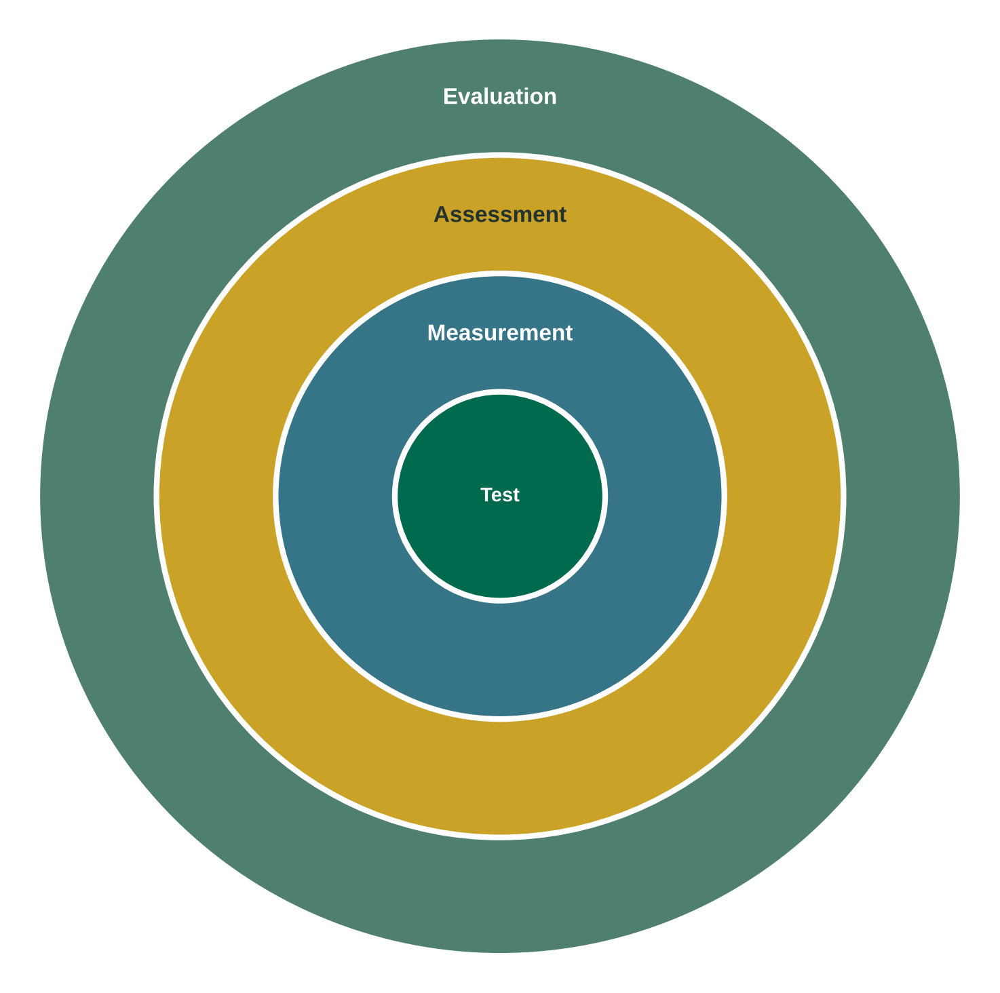
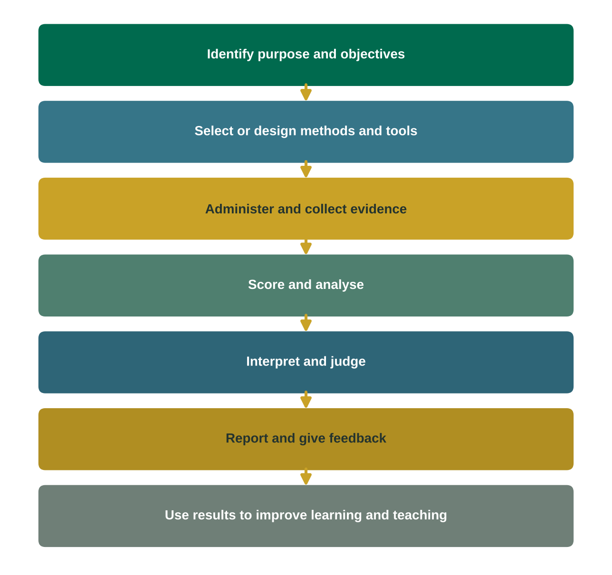
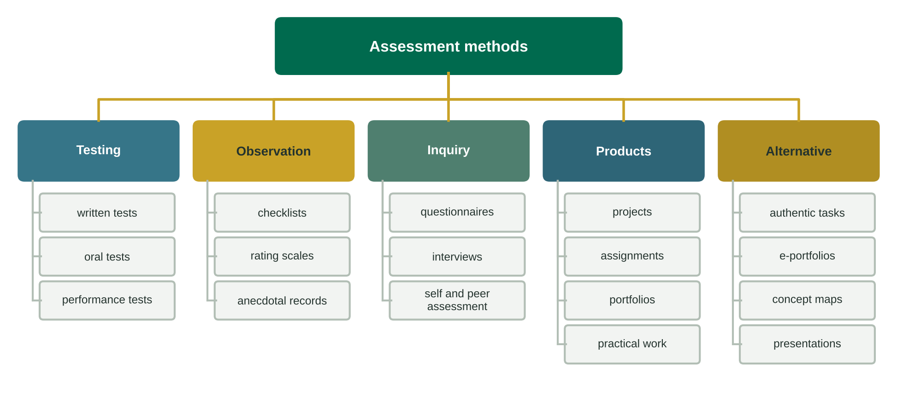
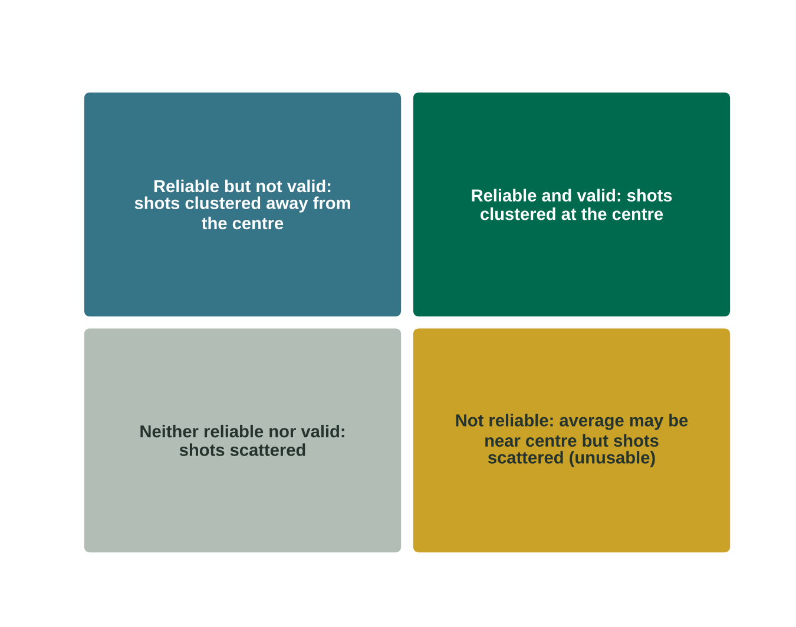

PC 117 শিক্ষাগত মূল্যায়নের পরিচিতি
পরিমাপ, উদ্দেশ্য, অভীক্ষা প্রণয়ন, যথার্থতা ও নির্ভরযোগ্যতা, প্রশ্ন বিশ্লেষণ, পরিসংখ্যান ও আদর্শ স্কোর
এটি ইংরেজি পাঠ নোটের বাংলা সংস্করণ। পাঠতালিকা ও তথ্যসূত্রের বইয়ের নাম মূল ভাষায় রাখা হয়েছে, যাতে লাইব্রেরিতে সহজে খুঁজে পান।
সূচিপত্র
- ইউনিট ১: মৌলিক পরিভাষা ও ধারণা
- ইউনিট ২: মূল্যায়নের ভিত্তি: শিখন উদ্দেশ্য ও শিখনফল
- ইউনিট ৩: মূল্যায়নের পদ্ধতি ও উপকরণ
- ইউনিট ৪: অভীক্ষা প্রণয়ন ও নম্বর প্রদান
- ইউনিট ৫: উত্তম অভীক্ষার বৈশিষ্ট্য
- ইউনিট ৬: অভীক্ষার আদর্শায়ন
- ইউনিট ৭: অভীক্ষার ফলাফল বোঝার জন্য পরিসংখ্যান
- ইউনিট ৮: আদর্শ স্কোর ও নর্ম
- পাঠতালিকা
- পরীক্ষা প্রস্তুতি প্রশ্নব্যাংক
- তথ্যসূত্র
এই কোর্স সম্পর্কে
মূল্যায়নের মধ্য দিয়েই শিক্ষাক্রম শিক্ষার্থীদের কাছে বাস্তব রূপ লাভ করে: যা মূল্যায়ন করা হয়, শিক্ষার্থীরা সেটিকেই মূল্যবান মনে করতে শেখে। এই কোর্সে অভীক্ষা (test), পরিমাপ (measurement), মূল্যায়ন (assessment) ও মূল্যবিচারের (evaluation) পরিভাষা গড়ে তোলা হয়েছে; ব্লুমের শ্রেণিবিন্যাসের (Bloom's taxonomy) মাধ্যমে মূল্যায়নকে শিখন উদ্দেশ্যের সঙ্গে যুক্ত করা হয়েছে; নির্দিষ্টকরণ ছক ও রুব্রিকসহ রচনামূলক, নৈর্ব্যক্তিক ও সৃজনশীল (কাঠামোবদ্ধ) প্রশ্ন প্রণয়ন ও নম্বর প্রদান শেখানো হয়েছে; যথার্থতা, নির্ভরযোগ্যতা ও আদর্শায়ন ব্যাখ্যা করা হয়েছে; এবং ফলাফল ব্যাখ্যার জন্য প্রয়োজনীয় পরিসংখ্যান (কেন্দ্রীয় প্রবণতা, বিচ্যুতি, পরিমিত রেখা, সহসম্বন্ধ, আদর্শ স্কোর ও শতাংশিক) বিকশিত করা হয়েছে। সমাধানকৃত উদাহরণ যুক্ত করা হয়েছে, যাতে আপনি পরীক্ষায় গাণিতিক প্রশ্নের সমাধান করতে পারেন।
কোর্সের উদ্দেশ্য
অভীক্ষা, পরিমাপ, মূল্যায়ন, মূল্যবিচার ও পরীক্ষার সংজ্ঞা দেওয়া ও এগুলোর পারস্পরিক সম্পর্ক নির্ণয় করা এবং মূল্যায়নের নীতি ও উদ্দেশ্য ব্যাখ্যা করা।
শিক্ষাদান ও মূল্যায়নের সঙ্গে সামঞ্জস্যপূর্ণ পরিমাপযোগ্য শিখন উদ্দেশ্য ও শিখনফল লেখা।
বিভিন্ন ধরনের অভীক্ষা-প্রশ্ন, নির্দিষ্টকরণ ছক ও রুব্রিক প্রণয়ন করা এবং নম্বর প্রদান করা।
অভীক্ষার যথার্থতা, নির্ভরযোগ্যতা ও গুণমান নির্ধারণ করা, প্রশ্ন বিশ্লেষণ পরিচালনা করা এবং অভীক্ষার পরিসংখ্যান ও আদর্শ স্কোর ব্যাখ্যা করা।
প্রতিটি ইউনিট অফিশিয়াল পাঠ্যসূচির ক্রম অনুসরণ করে। প্রথমে মূল আলোচনা পড়ুন, তারপর মূল কথা বক্সগুলো, এরপর পরীক্ষার প্রস্তুতি প্রশ্ন দিয়ে নিজেকে যাচাই করুন।
সোনালি বক্স = অবশ্যই মনে রাখার বিষয়। সবুজাভ নীল বক্স = সংজ্ঞা ও পড়ার কৌশল। সবুজ বক্স = বাংলাদেশ প্রেক্ষাপট।
শেষ অধ্যায়টি বিশ্ববিদ্যালয় পরীক্ষার ধরনে একটি প্রশ্নব্যাংক (উত্তরসহ MCQ, সংক্ষিপ্ত ও রচনামূলক প্রশ্ন), এরপর APA 7th রীতিতে পূর্ণ তথ্যসূত্র।
ভর্তি, বাজেট ও নীতি সংক্রান্ত পরিসংখ্যান প্রতি বছর বদলায়। পরীক্ষার আগে BANBEIS, DPE, UGC ও UNESCO-এর সর্বশেষ তথ্য দেখে নিন।
ইউনিট ১: মৌলিক পরিভাষা ও ধারণা
অধ্যায়ের সারসংক্ষেপ
চিত্র ১. অভীক্ষা, পরিমাপ, মূল্যায়ন ও মূল্যবিচারের অন্তর্ভুক্তিমূলক (স্তরবিন্যস্ত) সম্পর্ক
এই অধ্যায়ে যা আছে: অভীক্ষা, পরিমাপ, মূল্যায়ন, মূল্যবিচার ও পরীক্ষা; শিক্ষাক্রম, শিখন-শেখানো ও মূল্যায়ন; শিক্ষণচর্চায় মূল্যায়নের প্রভাব ("washback"); মূল্যায়নের নীতি; মূল্যায়ন প্রক্রিয়া; পরিমাপের স্তর; মূল্যায়নের উদ্দেশ্য ও শ্রেণিবিভাগ।
মনে রাখার মূল বিষয়:
- একটি প্রচলিত সূত্র: মূল্যবিচার = পরিমাপ (পরিমাণগত বর্ণনা) অথবা অ-পরিমাপ (গুণগত বর্ণনা) + মূল্য-বিচার (Gronlund & Linn)।
শিক্ষাক্রমে যা বলা হয়েছেইউনিট ১: মৌলিক পরিভাষা ও ধারণা · ৪ সংযোগ ঘণ্টা
এই ইউনিট শেষে শিক্ষার্থীরা যা পারবে
- মূল্যায়নের মৌলিক পরিভাষাগুলোর ধারণা ব্যাখ্যা করতে পারবেন
- মূল্যায়নের উদ্দেশ্য ও তাৎপর্য ব্যাখ্যা করতে পারবেন
- অভীক্ষা, পরীক্ষা, মূল্যায়ন ও মূল্যবিচারের মধ্যে পার্থক্য নির্দেশ করতে পারবেন
- অভীক্ষা, পরিমাপ, মূল্যায়ন ও মূল্যবিচারের পারস্পরিক সম্পর্ক বর্ণনা করতে পারবেন
- অভীক্ষা, পরিমাপ, মূল্যায়ন, মূল্যবিচার ও পরীক্ষার সংজ্ঞা ও অর্থ
- অভীক্ষা, পরিমাপ, মূল্যায়ন ও মূল্যবিচারের মধ্যে পার্থক্য ও সম্পর্ক
- শিক্ষাক্রম, শিখন-শেখানো ও মূল্যায়ন
- শিক্ষাগত চর্চায় (শিক্ষাদান ও শিখন) মূল্যায়নের প্রভাব
- মূল্যায়নের নীতি
- মূল্যায়ন প্রক্রিয়া: শিক্ষাগত মূল্যায়নের ধাপসমূহ
- পরিমাপের স্তর
- মূল্যায়নের উদ্দেশ্য ও শ্রেণিবিভাগ: শিখনের মূল্যায়ন/সামষ্টিক মূল্যায়ন, শিখনের জন্য ও শিখন হিসেবে মূল্যায়ন/গঠনকালীন মূল্যায়ন, একীভূতকরণের জন্য মূল্যায়ন
১.১ অভীক্ষা, পরিমাপ, মূল্যায়ন, মূল্যবিচার ও পরীক্ষা
| পরিভাষা | সংজ্ঞা | মূল বৈশিষ্ট্য |
|---|---|---|
| অভীক্ষা | আচরণের একটি নমুনা পরিমাপের জন্য একটি নিয়মতান্ত্রিক পদ্ধতি বা উপকরণ (Gronlund) | একটি উপকরণ: প্রশ্ন বা কাজের একটি সমষ্টি |
| পরিমাপ | "নিয়ম অনুসারে বস্তু বা ঘটনার ওপর সংখ্যা আরোপ" (Stevens, 1946) | পরিমাণগত: "কতটুকু?" প্রশ্নের উত্তর দেয় |
| মূল্যায়ন | অভীক্ষা ও অন্যান্য পদ্ধতির (পর্যবেক্ষণ, পোর্টফোলিও, প্রকল্প) মাধ্যমে শিক্ষার্থীদের শিখন সম্পর্কে তথ্য সংগ্রহ, ব্যাখ্যা ও ব্যবহারের প্রক্রিয়া | অভীক্ষা গ্রহণের চেয়ে বিস্তৃত; পরিমাণগত বা গুণগত উভয়ই হতে পারে |
| মূল্যবিচার (Evaluation) | "শিক্ষণ উদ্দেশ্যসমূহ কতটুকু অর্জিত হয়েছে তা নির্ধারণের নিয়মতান্ত্রিক প্রক্রিয়া" (Gronlund); মূল্য বা উৎকর্ষ সম্পর্কে একটি মূল্য-বিচার | বিচার: "কতটা ভালো?" প্রশ্নের উত্তর দেয় |
| পরীক্ষা (Examination) | নিয়ন্ত্রিত পরিবেশে পরিচালিত একটি আনুষ্ঠানিক, সাধারণত সামষ্টিক মূল্যায়ন, যা প্রায়ই পাবলিক পরীক্ষা (যেমন SSC, HSC) | আনুষ্ঠানিক, উচ্চ-ঝুঁকিপূর্ণ, সনদ প্রদানমূলক |
একটি প্রচলিত সূত্র: মূল্যবিচার = পরিমাপ (পরিমাণগত বর্ণনা) অথবা অ-পরিমাপ (গুণগত বর্ণনা) + মূল্য-বিচার (Gronlund & Linn)। মূল্যায়নে পরিমাপ ও অ-পরিমাপ উভয় ধরনের তথ্য অন্তর্ভুক্ত থাকে; মূল্যবিচার এর সঙ্গে বিচার যুক্ত করে।

চিত্র ১. অভীক্ষা, পরিমাপ, মূল্যায়ন ও মূল্যবিচারের অন্তর্ভুক্তিমূলক (স্তরবিন্যস্ত) সম্পর্ক
১.২ শিক্ষাক্রম, শিখন-শেখানো ও মূল্যায়ন
শিক্ষাক্রম (curriculum) (কী শেখা উচিত), শিক্ষাদান (কীভাবে শেখানো হয়) এবং মূল্যায়ন (কীভাবে শিখন যাচাই করা হয়) একটি ত্রিভুজ গঠন করে, যাকে অবশ্যই গঠনমূলকভাবে সমন্বিত (constructively aligned) হতে হবে (Biggs, 1996): উদ্দেশ্য, কার্যক্রম ও মূল্যায়ন-কাজ সবই একই শিখনফলকে লক্ষ্য করবে। মূল্যায়ন যখন অসমন্বিত হয়, যেমন শিক্ষাক্রম যেখানে সমস্যা সমাধান চায় সেখানে কেবল স্মরণশক্তি যাচাই করা হয়, তখন শিক্ষাদান ও শিখন যা পরীক্ষা করা হয় সেদিকেই সরে যায়।

চিত্র ২. গঠনমূলক সমন্বয়: শিক্ষাক্রম, শিক্ষাদান ও মূল্যায়নকে একই শিখনফল লক্ষ্য করতে হবে
১.৩ শিক্ষণচর্চায় মূল্যায়নের প্রভাব ("washback")
শিক্ষাদান ও শিখনের ওপর মূল্যায়নের একটি শক্তিশালী backwash বা washback (প্রতিক্রিয়া) প্রভাব রয়েছে (Alderson & Wall, 1993)। পরীক্ষা যখন বোধগম্যতা ও দক্ষতাকে পুরস্কৃত করে, তখন ইতিবাচক washback ঘটে; আর উচ্চ-ঝুঁকিপূর্ণ পরীক্ষা যখন মুখস্থবিদ্যা, গাইডবই, কোচিং এবং "পরীক্ষাকেন্দ্রিক শিক্ষাদান" উৎসাহিত করে, তখন নেতিবাচক washback ঘটে, যা বাংলাদেশের পাবলিক পরীক্ষাগুলোতে ব্যাপকভাবে লক্ষ করা যায়। গঠনকালীন মূল্যায়ন (formative assessment) বিষয়ক গবেষণায় (Black & Wiliam, 1998) অর্জনের ওপর ০.৪–০.৭ প্রভাবের আকার (effect size) পাওয়া গেছে, যা যেকোনো শিক্ষাগত হস্তক্ষেপের মধ্যে সর্বোচ্চগুলোর অন্যতম।
১.৪ মূল্যায়নের নীতি
উদ্দেশ্যের স্পষ্টতা: কী মূল্যায়ন করা হবে এবং কেন, তা নির্ধারণ করুন।
উদ্দেশ্য ও শিক্ষাদানের সঙ্গে সমন্বয়।
যথার্থতা (Validity): যা পরিমাপ করার কথা, তা-ই পরিমাপ করা।
নির্ভরযোগ্যতা (Reliability): সামঞ্জস্যপূর্ণ ফলাফল প্রদান করা।
ন্যায্যতা ও একীভূততা: পক্ষপাতমুক্ত হওয়া; বৈচিত্র্যময় শিক্ষার্থীদের জন্য প্রয়োজনীয় সুবিধা বা অভিযোজন রাখা।
বৈচিত্র্য: পূর্ণাঙ্গ চিত্র পেতে একাধিক পদ্ধতি ব্যবহার করা।
স্বচ্ছতা: মূল্যায়নের মানদণ্ড শিক্ষার্থীদের আগে থেকেই জানা থাকা।
ব্যবহারযোগ্যতা: সময়, ব্যয় ও শ্রমের দিক থেকে বাস্তবায়নযোগ্য হওয়া।
ফলাবর্তন (Feedback): সময়োপযোগী, সুনির্দিষ্ট ও কার্যকর।
ধারাবাহিকতা: চলমান, একবারের ঘটনা নয়।
নৈতিকতা: গোপনীয়তা, সততা ও ক্ষতি পরিহার।
১.৫ মূল্যায়ন প্রক্রিয়া

চিত্র ৩. শিক্ষাগত মূল্যায়নের ধাপসমূহ
১.৬ পরিমাপের স্তর
| স্কেল | বৈশিষ্ট্য | উদাহরণ | প্রযোজ্য পরিসংখ্যান |
|---|---|---|---|
| নামসূচক | কেবল শ্রেণি বা বিভাগ; কোনো ক্রম নেই | জেন্ডার, ধর্ম, রোল নম্বর | প্রচুরক, গণসংখ্যা, কাই-বর্গ (chi-square) |
| ক্রমসূচক | ক্রম আছে, ব্যবধান অসমান | শ্রেণিতে অবস্থান, গ্রেড A/B/C, লিকার্ট রেটিং | মধ্যমা, শতাংশিক, ক্রম সহসম্বন্ধ |
| ব্যবধান | ক্রম আছে, ব্যবধান সমান, প্রকৃত শূন্য নেই | তাপমাত্রা (°C), আদর্শায়িত অভীক্ষার স্কোর | গড়, SD, Pearson r |
| অনুপাত | ক্রম আছে, ব্যবধান সমান, প্রকৃত শূন্য আছে | উচ্চতা, ওজন, ব্যয়িত সময়, সঠিক উত্তরের সংখ্যা | অনুপাতসহ সকল পরিসংখ্যান |
১.৭ মূল্যায়নের উদ্দেশ্য ও শ্রেণিবিভাগ
| প্রকার | উদ্দেশ্য | সময় | উদাহরণসমূহ |
|---|---|---|---|
| নিদানমূলক (Diagnostic) | পূর্বজ্ঞান, সবলতা ও শিখন-সমস্যা চিহ্নিত করা | শিক্ষাদানের আগে বা চলাকালে | প্রাক-অভীক্ষা, নিদানমূলক সাক্ষাৎকার |
| গঠনকালীন: শিখনের জন্য মূল্যায়ন (AfL) | অগ্রগতি পর্যবেক্ষণ করা এবং শিখন উন্নয়নের জন্য ফলাবর্তন দেওয়া | শিক্ষাদান চলাকালে | প্রশ্নোত্তর, কুইজ, এক্সিট টিকিট, সহপাঠী ফলাবর্তন |
| শিখন হিসেবে মূল্যায়ন (AaL) | শিক্ষার্থীরা নিজেদের শিখন নিজেরাই পর্যবেক্ষণ ও নিয়ন্ত্রণ করে (অধিজ্ঞান বা metacognition) | সমগ্র প্রক্রিয়াজুড়ে | স্ব-মূল্যায়ন, শিখন-দিনলিপি, লক্ষ্য নির্ধারণ |
| সামষ্টিক: শিখনের মূল্যায়ন (AoL) | অর্জন বিচার করা ও সনদ প্রদান করা | ইউনিট, টার্ম বা কোর্সের শেষে | চূড়ান্ত পরীক্ষা, SSC/HSC |
| স্থাপনমূলক (Placement) | শিক্ষার্থীদের উপযুক্ত স্তর বা দলে স্থাপন করা | শিক্ষাদানের আগে | ভর্তি পরীক্ষা |
| একীভূতকরণের জন্য মূল্যায়ন | সকল শিক্ষার্থী যাতে অংশগ্রহণ করতে এবং নিজেদের শিখন প্রদর্শন করতে পারে, সেজন্য প্রতিবন্ধকতা চিহ্নিত ও দূর করা | সমগ্র প্রক্রিয়াজুড়ে | সর্বজনীন নকশা (universal design), প্রয়োজনীয় সুবিধা বা অভিযোজন, বিকল্প ফরম্যাট |
"একীভূতকরণের জন্য মূল্যায়ন" (assessment for inclusion) একটি সাম্প্রতিক ধারণা (Nieminen, 2022; Tai et al., 2022), যা প্রশ্ন তোলে যে মূল্যায়নের নকশা কিছু শিক্ষার্থীকে (যেমন প্রতিবন্ধী শিক্ষার্থী বা দ্বিতীয় ভাষায় শিখছে এমন শিক্ষার্থী) সুবিধাবঞ্চিত করে কি না, এবং কীভাবে এমন মূল্যায়ন নকশা করা যায় যাতে সকল শিক্ষার্থী তাদের শিখন প্রদর্শন করতে পারে।
ইউনিট ২: মূল্যায়নের ভিত্তি: শিখন উদ্দেশ্য ও শিখনফল
অধ্যায়ের সারসংক্ষেপ
শিখন উদ্দেশ্য বলে দেয় শিক্ষাদানের পর শিক্ষার্থীরা কী করতে সক্ষম হবে। উদ্দেশ্য বিষয়বস্তু, পদ্ধতি ও উপকরণ নির্বাচনে দিকনির্দেশনা দেয়, শিক্ষার্থীদের কাছে প্রত্যাশা জানিয়ে দেয় এবং মূল্যায়নের ভিত্তি তৈরি করে।
এই অধ্যায়ে যা আছে: শিখন উদ্দেশ্যের ধারণা ও গুরুত্ব; ব্লুমের শ্রেণিবিন্যাস; পরিমাপযোগ্য (আচরণগত) উদ্দেশ্য; শিক্ষক ও শিক্ষার্থীর ভূমিকা; উদ্দেশ্য, শিক্ষাদান, শিখনফল ও মূল্যায়নের পারস্পরিক সম্পর্ক।
মূল পরিভাষা:
- ABCD উদ্দেশ্য : A udience বা শ্রোতা (সপ্তম শ্রেণির শিক্ষার্থীরা) B ehaviour বা আচরণ (দুই ধাপের সরল সমীকরণ সমাধান করবে) C ondition বা শর্ত (ক্যালকুলেটর ছাড়া) D egree বা মাত্রা (১০টির মধ্যে অন্তত ৮টি সঠিক)।
শিক্ষাক্রমে যা বলা হয়েছেইউনিট ২: মূল্যায়নের ভিত্তি: শিখন উদ্দেশ্য ও শিখনফল · ৬ সংযোগ ঘণ্টা
এই ইউনিট শেষে শিক্ষার্থীরা যা পারবে
- শিখন উদ্দেশ্য ও শিখনফল বুঝতে ও প্রণয়ন করতে পারবেন
- শিখন উদ্দেশ্য, শিখনফল, শিক্ষাদান ও মূল্যায়নের পারস্পরিক সম্পর্ক ব্যাখ্যা করতে পারবেন
- আচরণগত উদ্দেশ্য লেখার ক্ষেত্রে শিক্ষাগত উদ্দেশ্যের শ্রেণিবিন্যাস ব্যবহার করতে পারবেন
- শিখন উদ্দেশ্যের ধারণা ও গুরুত্ব; শিখন উদ্দেশ্যের ব্লুমের শ্রেণিবিন্যাস
- মূল্যায়নযোগ্য/পরিমাপযোগ্য বা আচরণগত শিখন উদ্দেশ্য বা শিখনফল
- শিখন উদ্দেশ্য ও শিখনফল লিখন
- শিখন উদ্দেশ্য ও শিখনফল নির্ধারণ ও লিখনে শিক্ষক ও শিক্ষার্থীর ভূমিকা
- শিখন উদ্দেশ্য, শিক্ষাদান, শিখনফল ও মূল্যায়নের পারস্পরিক সম্পর্ক
২.১ শিখন উদ্দেশ্যের ধারণা ও গুরুত্ব
শিখন উদ্দেশ্য (learning objective) বলে দেয় শিক্ষাদানের পর শিক্ষার্থীরা কী করতে সক্ষম হবে। উদ্দেশ্য বিষয়বস্তু, পদ্ধতি ও উপকরণ নির্বাচনে দিকনির্দেশনা দেয়, শিক্ষার্থীদের কাছে প্রত্যাশা জানিয়ে দেয় এবং মূল্যায়নের ভিত্তি তৈরি করে। শিখনফল (learning outcome) হলো শিক্ষার্থী প্রকৃতপক্ষে কী অর্জন করেছে বা কী প্রদর্শন করবে বলে প্রত্যাশিত, তার একটি বিবৃতি, যা প্রায়ই প্রোগ্রাম পর্যায়ে লেখা হয়। বাস্তবে উভয়ই পর্যবেক্ষণযোগ্য ক্রিয়াপদ দিয়ে লেখা হয়।
২.২ ব্লুমের শ্রেণিবিন্যাস
বুদ্ধিবৃত্তীয় ক্ষেত্র (Cognitive domain)। Bloom et al. (1956) ছয়টি স্তর প্রস্তাব করেন: জ্ঞান (Knowledge), অনুধাবন (Comprehension), প্রয়োগ (Application), বিশ্লেষণ (Analysis), সংশ্লেষণ (Synthesis) ও মূল্যায়ন (Evaluation)। Anderson ও Krathwohl (2001) এটি সংশোধন করে স্তরগুলোকে ক্রিয়াপদে রূপ দেন এবং ওপরের দুটি স্তরের ক্রম পরিবর্তন করেন।
, সর্বোচ্চ স্তর সবার ওপরে")
চিত্র ৪. বুদ্ধিবৃত্তীয় ক্ষেত্রের সংশোধিত ব্লুমের শ্রেণিবিন্যাস (Anderson & Krathwohl, 2001), সর্বোচ্চ স্তর সবার ওপরে
সংশোধনে একটি জ্ঞানমাত্রাও (knowledge dimension) যুক্ত হয়েছে: তথ্যগত, ধারণাগত, পদ্ধতিগত ও অধিজ্ঞানমূলক জ্ঞান, যা একটি দ্বিমাত্রিক শ্রেণিবিন্যাস ছক তৈরি করে।
আবেগীয় ক্ষেত্র (Affective domain) (Krathwohl, Bloom & Masia, 1964): গ্রহণ → সাড়াদান → মূল্যারোপ → সংগঠন → মূল্যবোধ-কাঠামো দ্বারা চরিত্রায়ন।
মনোপেশিজ ক্ষেত্র (Psychomotor domain) (Dave, 1970): অনুকরণ → নাড়াচাড়া বা প্রয়োগ → নির্ভুলতা → সমন্বয় → স্বাভাবিকীকরণ। Simpson (1972) ও Harrow (1972) বিকল্প মডেল প্রস্তাব করেছেন।
২.৩ পরিমাপযোগ্য (আচরণগত) উদ্দেশ্য
মেজার (Mager, 1962) তিনটি উপাদান প্রস্তাব করেন: সম্পাদন (শিক্ষার্থী কী করবে), শর্ত (কোন পরিস্থিতিতে) এবং মানদণ্ড (কতটা ভালোভাবে)। ABCD ফরম্যাটে এর সঙ্গে শ্রোতা (Audience) যুক্ত হয়।
ABCD উদ্দেশ্য: Audience বা শ্রোতা (সপ্তম শ্রেণির শিক্ষার্থীরা) Behaviour বা আচরণ (দুই ধাপের সরল সমীকরণ সমাধান করবে) Condition বা শর্ত (ক্যালকুলেটর ছাড়া) Degree বা মাত্রা (১০টির মধ্যে অন্তত ৮টি সঠিক)।
সুনির্দিষ্ট উদ্দেশ্যে "জানা", "বোঝা", "উপলব্ধি করা" ও "শেখা"-এর মতো অস্পষ্ট ক্রিয়াপদ পরিহার করুন; এর পরিবর্তে "তালিকা করা", "ব্যাখ্যা করা", "হিসাব করা", "তুলনা করা", "নকশা করা" ও "যৌক্তিকতা প্রদর্শন করা"-এর মতো কর্মবাচক ক্রিয়াপদ ব্যবহার করুন। SMART উদ্দেশ্য হলো সুনির্দিষ্ট (Specific), পরিমাপযোগ্য (Measurable), অর্জনযোগ্য (Achievable), প্রাসঙ্গিক (Relevant) ও সময়াবদ্ধ (Time-bound)।
২.৪ শিক্ষক ও শিক্ষার্থীর ভূমিকা
শিক্ষকগণ শিক্ষাক্রমের যোগ্যতা ও শিক্ষার্থীর চাহিদা থেকে উদ্দেশ্য নির্ধারণ করেন এবং শিক্ষার্থীবান্ধব ভাষায় ("আমি পারি..." ধরনের বিবৃতি) তা শিক্ষার্থীদের জানান। শিক্ষার্থীরা সাফল্যের মানদণ্ড যৌথভাবে নির্মাণ করতে, সেগুলোর ভিত্তিতে স্ব-মূল্যায়ন করতে এবং ব্যক্তিগত লক্ষ্য স্থির করতে পারে, যা শিখনের জন্য মূল্যায়নের একটি মূল চর্চা (Wiliam, 2011)।
২.৫ উদ্দেশ্য, শিক্ষাদান, শিখনফল ও মূল্যায়নের পারস্পরিক সম্পর্ক
উদ্দেশ্য শিক্ষাদানকে পরিচালিত করে; শিক্ষাদান শিখনফল সৃষ্টি করে; মূল্যায়ন উদ্দেশ্যের সাপেক্ষে শিখনফলের প্রমাণ সরবরাহ করে; এবং ফলাফল ফলাবর্তন হিসেবে ফিরে এসে উদ্দেশ্য ও শিক্ষাদান সংশোধনে সহায়তা করে। এটিই টাইলার যুক্তিকাঠামো (Tyler rationale) (1949) এবং গঠনমূলক সমন্বয়ের যুক্তি।
ইউনিট ৩: মূল্যায়নের পদ্ধতি ও উপকরণ
অধ্যায়ের সারসংক্ষেপ
লিখিত অভীক্ষায় শিক্ষার্থীদের লিখিতভাবে উত্তর দিতে হয়। প্রকৃতি: বড় দলের জন্য সাশ্রয়ী, স্থায়ী রেকর্ড থাকে, পরিবেশ আদর্শায়িত থাকে।
এই অধ্যায়ে যা আছে: পদ্ধতি ও উপকরণ; মূল্যায়ন-উপকরণ হিসেবে অভীক্ষা; লিখিত অভীক্ষা; মৌখিক ও সম্পাদনমূলক অভীক্ষা; নর্মভিত্তিক ও মানদণ্ডভিত্তিক অভীক্ষা; একীভূত মূল্যায়নের উপকরণ ও কৌশল; বিকল্প মূল্যায়ন।
শিক্ষাক্রমে যা বলা হয়েছেইউনিট ৩: মূল্যায়নের পদ্ধতি ও উপকরণ · ৪ সংযোগ ঘণ্টা
এই ইউনিট শেষে শিক্ষার্থীরা যা পারবে
- পরিমাপ ও মূল্যায়নের বিভিন্ন উপকরণ চিহ্নিত করতে পারবেন
- বিভিন্ন মূল্যায়ন-উপকরণের ব্যবহার ব্যাখ্যা করতে পারবেন
- অভীক্ষা প্রণয়নের প্রয়োজনীয় ধাপসমূহ বর্ণনা করতে পারবেন
- মূল্যায়নের বিভিন্ন পদ্ধতি ও উপকরণ
- মূল্যায়ন-উপকরণ হিসেবে অভীক্ষা: ধারণা ও শ্রেণিবিভাগ (লিখিত, মৌখিক, সম্পাদনমূলক অভীক্ষা; শিক্ষক-প্রণীত ও আদর্শায়িত অভীক্ষা)
- লিখিত অভীক্ষা: সংজ্ঞা, শ্রেণিবিভাগ, প্রকৃতি ও উদ্দেশ্য
- মৌখিক ও সম্পাদনমূলক অভীক্ষা: সংজ্ঞা, প্রকৃতি ও উদ্দেশ্য
- নর্মভিত্তিক ও মানদণ্ডভিত্তিক অভীক্ষা
- একীভূত মূল্যায়নের উপকরণ ও কৌশল
- বিকল্প মূল্যায়ন
৩.১ পদ্ধতি ও উপকরণ

চিত্র ৫. মূল্যায়নের পদ্ধতি ও উপকরণ
৩.২ মূল্যায়ন-উপকরণ হিসেবে অভীক্ষা
অভীক্ষার শ্রেণিবিভাগ:
মাধ্যম অনুসারে: লিখিত, মৌখিক, সম্পাদনমূলক।
প্রণয়ন অনুসারে: শিক্ষক-প্রণীত ও আদর্শায়িত।
ব্যাখ্যা অনুসারে: নর্মভিত্তিক ও মানদণ্ডভিত্তিক।
উদ্দেশ্য অনুসারে: অর্জন, প্রবণতা (aptitude), নিদানমূলক, বুদ্ধি, ব্যক্তিত্ব।
সময় অনুসারে: গতি অভীক্ষা (speed test) ও ক্ষমতা অভীক্ষা (power test)।
ফরম্যাট অনুসারে: রচনামূলক (সরবরাহ-ধরন, বিষয়নিষ্ঠ) ও নৈর্ব্যক্তিক (নির্বাচন-ধরন)।
৩.৩ লিখিত অভীক্ষা
লিখিত অভীক্ষায় শিক্ষার্থীদের লিখিতভাবে উত্তর দিতে হয়। প্রকৃতি: বড় দলের জন্য সাশ্রয়ী, স্থায়ী রেকর্ড থাকে, পরিবেশ আদর্শায়িত থাকে। উদ্দেশ্য: জ্ঞান, অনুধাবন, প্রয়োগ ও উচ্চতর স্তরের চিন্তন পরিমাপ করা। প্রকারভেদ: রচনামূলক (বর্ধিত ও সীমিত উত্তর), সংক্ষিপ্ত উত্তর, নৈর্ব্যক্তিক (MCQ, সত্য–মিথ্যা, মিলকরণ, শূন্যস্থান পূরণ) এবং কাঠামোবদ্ধ (সৃজনশীল) প্রশ্ন।
৩.৪ মৌখিক ও সম্পাদনমূলক অভীক্ষা
মৌখিক অভীক্ষা (viva voce): শিক্ষার্থীরা মৌখিকভাবে উত্তর দেয়। এটি যোগাযোগ, যুক্তি, অনুধাবনের গভীরতা ও ভাষাগত দক্ষতা মূল্যায়ন করে এবং ছোট শিশু ও লিখতে অসুবিধা আছে এমন শিক্ষার্থীদের জন্য উপযোগী। তবে এটি সময়সাপেক্ষ এবং পরীক্ষকের বিষয়নিষ্ঠতার (ব্যক্তিগত পক্ষপাতের) ঝুঁকিপূর্ণ।
সম্পাদনমূলক অভীক্ষা (Performance tests): শিক্ষার্থীরা একটি কাজ সম্পাদন করে বা একটি পণ্য তৈরি করে (গবেষণাগারের পরীক্ষণ, বক্তৃতা, চিত্রাঙ্কন, ক্রীড়া দক্ষতা, শিক্ষণ অনুশীলন)। এটি প্রকৃত প্রেক্ষাপটে দক্ষতা মূল্যায়ন করে এবং চেকলিস্ট, রেটিং স্কেল বা রুব্রিক দিয়ে নম্বর প্রদান করা হয়।
৩.৫ নর্মভিত্তিক ও মানদণ্ডভিত্তিক অভীক্ষা
| ভিত্তি | নর্মভিত্তিক অভীক্ষা (NRT) | মানদণ্ডভিত্তিক অভীক্ষা (CRT) |
|---|---|---|
| উদ্দেশ্য | একজন শিক্ষার্থীর সম্পাদনকে অন্যদের (একটি নর্ম দলের) সঙ্গে তুলনা করে | শিক্ষার্থী নির্দিষ্ট মানদণ্ড আয়ত্ত করেছে কি না তা নির্ধারণ করে |
| ব্যাখ্যা | শতাংশিক ক্রম, আদর্শ স্কোর, অবস্থান | আয়ত্তের শতকরা হার, মানদণ্ডের সাপেক্ষে পাস/ফেল |
| বিষয়বস্তু | বিস্তৃত, একটি ব্যাপক ক্ষেত্র থেকে নমুনা নেয় | সংকীর্ণ, সুনির্দিষ্টভাবে সংজ্ঞায়িত ক্ষেত্র |
| প্রশ্ন নির্বাচন | মাঝারি কাঠিন্যের এমন প্রশ্ন, যা শিক্ষার্থীদের মধ্যে পার্থক্য নির্দেশ করে | কাঠিন্য নির্বিশেষে উদ্দেশ্যের সঙ্গে সামঞ্জস্যপূর্ণ প্রশ্ন |
| উদাহরণ | ভর্তি পরীক্ষা, IQ অভীক্ষা | ড্রাইভিং পরীক্ষা, যোগ্যতাভিত্তিক শ্রেণিকক্ষ অভীক্ষা, আয়ত্ত অভীক্ষা |
৩.৬ একীভূত মূল্যায়নের উপকরণ ও কৌশল
সুবিধা-বিধান (Accommodations), যা কী মূল্যায়ন করা হচ্ছে তা পরিবর্তন না করে শিক্ষার্থী কীভাবে অভীক্ষায় প্রবেশ করে বা উত্তর দেয় তা পরিবর্তন করে: অতিরিক্ত সময়, বড় অক্ষরের মুদ্রণ, ব্রেইল, শ্রুতলেখক, পাঠক, ইশারা ভাষার দোভাষী, আলাদা কক্ষ, সহায়ক প্রযুক্তি।
পরিমার্জন (Modifications), যা গুরুতর প্রতিবন্ধিতাসম্পন্ন শিক্ষার্থীদের জন্য বিষয়বস্তু বা মান পরিবর্তন করে এবং যা একটি ব্যক্তিকেন্দ্রিক শিক্ষা পরিকল্পনা (IEP) দ্বারা পরিচালিত হয়।
মূল্যায়নের সর্বজনীন নকশা (Universal Design for Assessment): স্পষ্ট ভাষা, প্রবেশগম্য ফরম্যাট, শিখন প্রদর্শনের একাধিক উপায়।
বাংলাদেশে পাবলিক পরীক্ষায় দৃষ্টিপ্রতিবন্ধী পরীক্ষার্থীদের জন্য অতিরিক্ত সময় ও শ্রুতলেখকের সুযোগ রয়েছে, এবং প্রতিবন্ধী ব্যক্তির অধিকার ও সুরক্ষা আইন ২০১৩ এ ধরনের সুবিধা-বিধানকে সমর্থন করে।
৩.৭ বিকল্প মূল্যায়ন
প্রচলিত কাগজ-কলমের অভীক্ষার বিকল্পসমূহ: প্রকৃত মূল্যায়ন (authentic assessment) (বাস্তব জীবনের কাজ; Wiggins, 1990), সম্পাদনমূলক মূল্যায়ন, পোর্টফোলিও (অগ্রগতি প্রদর্শনকারী কাজের উদ্দেশ্যমূলক সংকলন), প্রকল্প, স্ব-মূল্যায়ন ও সহপাঠী মূল্যায়ন, ধারণা-মানচিত্র, শিখন-দিনলিপি, উপস্থাপনা এবং ই-পোর্টফোলিও। সবলতা: উচ্চতর স্তরের ও ব্যবহারিক দক্ষতা মূল্যায়ন করে, সম্পৃক্ততা ও প্রতিফলন বৃদ্ধি করে। সীমাবদ্ধতা: সময়, নম্বর প্রদানের নির্ভরযোগ্যতা, স্পষ্ট রুব্রিকের প্রয়োজনীয়তা।
ইউনিট ৪: অভীক্ষা প্রণয়ন ও নম্বর প্রদান
অধ্যায়ের সারসংক্ষেপ
নীতিমালা: উচ্চতর স্তরের শিখনফলের জন্য রচনামূলক প্রশ্ন ব্যবহার করুন; সুনির্দিষ্ট নির্দেশক ক্রিয়াপদ দিয়ে কাজটি স্পষ্টভাবে সংজ্ঞায়িত করুন; নম্বর ও সময় উল্লেখ করুন; ঐচ্ছিক প্রশ্ন পরিহার করুন (এগুলো তুলনাযোগ্যতা কমায়); আগে থেকেই একটি নমুনা উত্তর ও নম্বর প্রদানের পরিকল্পনা প্রস্তুত করুন।
এই অধ্যায়ে যা আছে: রচনামূলক অভীক্ষা; নৈর্ব্যক্তিক অভীক্ষা; কাঠামোবদ্ধ / সৃজনশীল প্রশ্ন (CQ); শিক্ষক-প্রণীত অভীক্ষা প্রণয়নের ধাপ; নির্দিষ্টকরণ ছক; রুব্রিক।
শিক্ষাক্রমে যা বলা হয়েছেইউনিট ৪: অভীক্ষা প্রণয়ন ও নম্বর প্রদান · ৯ সংযোগ ঘণ্টা
এই ইউনিট শেষে শিক্ষার্থীরা যা পারবে
- বিভিন্ন ধরনের অভীক্ষা-প্রশ্ন প্রণয়ন করতে পারবেন
- রচনামূলক অভীক্ষা প্রণয়নের জন্য নির্দিষ্টকরণ ছক প্রস্তুত করতে পারবেন
- একটি নির্দিষ্ট অভীক্ষা-প্রশ্নের জন্য মূল্যায়ন রুব্রিক তৈরি করতে পারবেন
- রচনামূলক অভীক্ষা (সংক্ষিপ্ত উত্তর, বর্ধিত উত্তর): নীতি ও চর্চা, সবলতা ও সীমাবদ্ধতা
- নৈর্ব্যক্তিক ধরন (MCQ, সত্য-মিথ্যা, মিলকরণ, পুনর্বিন্যাস, শূন্যস্থান পূরণ): নীতি ও চর্চা,
- কাঠামোবদ্ধ/সৃজনশীল প্রশ্ন: নীতি ও চর্চা, সবলতা ও সীমাবদ্ধতা
- (শিক্ষক-প্রণীত) অভীক্ষা প্রণয়নের ধাপসমূহ
- নির্দিষ্টকরণ ছক: ধারণা, গুরুত্ব ও প্রণয়ন প্রক্রিয়া
- নির্ভরযোগ্য নম্বর প্রদানের উপকরণ হিসেবে রুব্রিক; রুব্রিক প্রণয়নের প্রক্রিয়া
৪.১ রচনামূলক অভীক্ষা
| সীমিত (সংক্ষিপ্ত) উত্তর | বর্ধিত উত্তর | |
|---|---|---|
| প্রকৃতি | বিষয়বস্তু ও উত্তরের ধরন সীমিত করে ("তিনটি কারণ উল্লেখ করুন...") | ধারণা সংগঠিত, সমন্বিত ও প্রকাশ করার স্বাধীনতা দেয় ("আলোচনা করুন...", "মূল্যায়ন করুন...") |
| যা পরিমাপ করে | অনুধাবন, প্রয়োগ | বিশ্লেষণ, সংশ্লেষণ, মূল্যায়ন, সৃজনশীলতা, লিখন |
নীতিমালা: উচ্চতর স্তরের শিখনফলের জন্য রচনামূলক প্রশ্ন ব্যবহার করুন; সুনির্দিষ্ট নির্দেশক ক্রিয়াপদ দিয়ে কাজটি স্পষ্টভাবে সংজ্ঞায়িত করুন; নম্বর ও সময় উল্লেখ করুন; ঐচ্ছিক প্রশ্ন পরিহার করুন (এগুলো তুলনাযোগ্যতা কমায়); আগে থেকেই একটি নমুনা উত্তর ও নম্বর প্রদানের পরিকল্পনা প্রস্তুত করুন।
নম্বর প্রদান: একটি বিশ্লেষণমূলক রুব্রিক বা নম্বর-বণ্টন পরিকল্পনা ব্যবহার করুন; খাতা ধরে ধরে নয়, বরং সব খাতায় একটি একটি করে প্রশ্ন ধরে নম্বর দিন; পরিচয় গোপন রেখে নম্বর দিন; হাতের লেখা ও অপ্রাসঙ্গিক বিষয় উপেক্ষা করুন; কিছু নমুনা খাতার জন্য দ্বিতীয় পরীক্ষক ব্যবহার করুন।
সবলতা: উচ্চতর স্তরের চিন্তন ও প্রকাশক্ষমতা মূল্যায়ন করে; প্রস্তুত করা সহজ; আন্দাজে উত্তর দেওয়ার সুযোগ কমায়।
সীমাবদ্ধতা: বিষয়বস্তুর সীমিত নমুনায়ন; বিষয়নিষ্ঠ ও অনির্ভরযোগ্য নম্বর প্রদান ("হ্যালো প্রভাব" বা halo effect, পরীক্ষকের ক্লান্তি, ক্রমের প্রভাব); নম্বর দিতে সময়সাপেক্ষ; অপ্রাসঙ্গিক কথা দিয়ে উত্তর ভরাট করা (bluffing)।
৪.২ নৈর্ব্যক্তিক অভীক্ষা
| প্রকার | প্রণয়নের নীতি | শক্তিশালী দিক | সীমাবদ্ধতা |
|---|---|---|---|
| বহুনির্বাচনি প্রশ্ন (MCQ) | একটি সমস্যা উপস্থাপনকারী স্পষ্ট প্রশ্নমূল (stem); একটি স্পষ্টভাবে সর্বোত্তম উত্তর; ৩–৪টি বিশ্বাসযোগ্য বিভ্রান্তিকর বিকল্প (distractor); "উপরের সবগুলো/কোনোটিই নয়", নেতিবাচক শব্দ (অথবা সেগুলো মোটা অক্ষরে লিখুন), ব্যাকরণগত সূত্র ও দৈর্ঘ্যগত সূত্র পরিহার করুন; সঠিক উত্তরের অবস্থান দৈবভাবে বিন্যস্ত করুন | বিষয়বস্তুর ব্যাপক অন্তর্ভুক্তি, বস্তুনিষ্ঠ ও দ্রুত নম্বর প্রদান, উচ্চতর স্তরের চিন্তন যাচাই সম্ভব, প্রশ্ন বিশ্লেষণ করা যায় | ভালো বিভ্রান্তিকর বিকল্প লেখা কঠিন; আন্দাজে উত্তর দেওয়ার সুযোগ (৪টি বিকল্পে ২৫%); প্রকাশক্ষমতা বা সৃজনশীলতা পরিমাপ করতে পারে না |
| সত্য–মিথ্যা (বিকল্প উত্তর) | প্রতিটি বিবৃতিতে একটি ধারণা; নির্দিষ্টকারী শব্দ ("সবসময়", "কখনো না") পরিহার; সত্য ও মিথ্যা বিবৃতির সংখ্যা মোটামুটি সমান রাখা; পাঠ্যপুস্তক থেকে হুবহু নকল পরিহার | প্রণয়ন ও নম্বর প্রদান সহজ; বিস্তৃত নমুনায়ন করে | আন্দাজে উত্তরের সম্ভাবনা ৫০%; তুচ্ছ তথ্য মুখস্থে উৎসাহ দেয় |
| মিলকরণ | সমজাতীয় প্রতিজ্ঞা (premise) ও উত্তর; প্রতিজ্ঞার চেয়ে উত্তরের সংখ্যা বেশি; ছোট তালিকা (৫–১০); স্পষ্ট নির্দেশনা | সম্পর্ক বা সংযোগ যাচাইয়ে দক্ষ | তথ্যগত সংযোগের মধ্যে সীমাবদ্ধ |
| পুনর্বিন্যাস (ক্রম নির্ধারণ) | ক্রমের স্পষ্ট ভিত্তি; দ্ব্যর্থহীন ক্রম | ক্রম, প্রক্রিয়া ও কালানুক্রম যাচাই করে | আংশিক নম্বর প্রদান কঠিন |
| শূন্যস্থান পূরণ (সম্পূর্ণকরণ) | প্রতিটি প্রশ্নে একটি শূন্যস্থান, বাক্যের শেষের দিকে; কেবল মূল শব্দ বাদ দেওয়া; সুনির্দিষ্ট উত্তর | আন্দাজে উত্তরের সুযোগ কমায়; প্রণয়ন সহজ | নম্বর প্রদানে অস্পষ্টতা; মূলত স্মরণনির্ভর |

চিত্র ৬. একটি ভালো বহুনির্বাচনি প্রশ্নের গঠন
৪.৩ কাঠামোবদ্ধ / সৃজনশীল প্রশ্ন (CQ)
বাংলাদেশে ২০০৮ সাল থেকে SSC পরীক্ষায় (এবং ২০১০ সাল থেকে HSC পরীক্ষায়) প্রবর্তিত সৃজনশীল প্রশ্নে (srijonshil prosno) একটি উদ্দীপক (একটি অনুচ্ছেদ, ছবি, লেখচিত্র বা পরিস্থিতি) উপস্থাপন করা হয়, যার পরে ক্রমবর্ধমান বুদ্ধিবৃত্তীয় স্তরের চারটি উপপ্রশ্ন থাকে:
| অংশ | বুদ্ধিবৃত্তীয় স্তর | নম্বর | উদাহরণ ক্রিয়াপদ |
|---|---|---|---|
| (a) | জ্ঞান | 1 | কী, সংজ্ঞা দাও, নাম লেখো |
| (b) | অনুধাবন | 2 | ব্যাখ্যা করো, কেন |
| (c) | প্রয়োগ | 3 | প্রয়োগ করো, হিসাব করো, দেখাও কীভাবে |
| (d) | উচ্চতর দক্ষতা (বিশ্লেষণ, সংশ্লেষণ, মূল্যায়ন) | 4 | মূল্যায়ন করো, বিশ্লেষণ করো, তুলনা করো, যৌক্তিকতা দেখাও |
সবলতা: মুখস্থবিদ্যা কমায়, একাধিক স্তর যাচাই করে, অদেখা উদ্দীপক ব্যবহার করে। সীমাবদ্ধতা: অনেক শিক্ষকের ভালো উদ্দীপক লেখার প্রশিক্ষণ নেই, ফলে গাইডবই ও কোচিং সেই শূন্যতা পূরণ করেছে (Education Watch ও অন্যান্য গবেষণায় এটি নথিভুক্ত হয়েছে); উদ্দীপক প্রায়ই নকল করা হয়; (d) স্তরের নম্বর প্রদানে ব্যাপক তারতম্য দেখা যায়।
৪.৪ শিক্ষক-প্রণীত অভীক্ষা প্রণয়নের ধাপ

চিত্র ৭. শিক্ষক-প্রণীত অভীক্ষা প্রণয়নের ধাপসমূহ
৪.৫ নির্দিষ্টকরণ ছক
নির্দিষ্টকরণ ছক (table of specification, TOS) বা অভীক্ষার নীলনকশা (test blueprint) হলো একটি দ্বিমুখী ছক, যা বিষয়বস্তুর ক্ষেত্রগুলোকে বুদ্ধিবৃত্তীয় স্তরের (উদ্দেশ্যের) সঙ্গে সম্পর্কিত করে এবং শিক্ষাদানে প্রদত্ত গুরুত্ব অনুসারে প্রতিটি ঘরে প্রশ্নের সংখ্যা বা নম্বর বণ্টন করে। এটি বিষয়বস্তুগত যথার্থতা (content validity) নিশ্চিত করার প্রধান উপকরণ।
প্রণয়ন প্রক্রিয়া: (১) বিষয়বস্তুর ক্ষেত্রগুলো এবং প্রতিটিতে ব্যয়িত সময় বা গুরুত্ব তালিকাভুক্ত করুন; (২) বুদ্ধিবৃত্তীয় স্তরগুলো তালিকাভুক্ত করুন; (৩) মোট নম্বর নির্ধারণ করুন; (৪) গুরুত্বের অনুপাতে বিষয়বস্তুর মধ্যে নম্বর বণ্টন করুন; (৫) প্রতিটি বিষয়বস্তুর নম্বর স্তরগুলোর মধ্যে বণ্টন করুন; (৬) প্রতিটি ঘরের জন্য প্রশ্নের ধরন নির্ধারণ করুন।
| বিষয়বস্তু (গুরুত্ব) | স্মরণ | অনুধাবন | প্রয়োগ | বিশ্লেষণ/মূল্যায়ন | মোট |
|---|---|---|---|---|---|
| সালোকসংশ্লেষণ (৪০%) | 4 | 4 | 4 | 4 | 16 |
| শ্বসন (৩০%) | 3 | 3 | 3 | 3 | 12 |
| প্রস্বেদন (৩০%) | 3 | 3 | 3 | 3 | 12 |
| মোট | 10 (25%) | 10 (25%) | 10 (25%) | 10 (25%) | 40 |
৪.৬ রুব্রিক
রুব্রিক (rubric) হলো একটি নম্বর প্রদান নির্দেশিকা, যা একটি কাজের মানদণ্ডগুলো তালিকাভুক্ত করে এবং প্রতিটি মানদণ্ডের জন্য সম্পাদনের স্তর বর্ণনা করে (Brookhart, 2013)।
বিশ্লেষণমূলক রুব্রিক (Analytic rubric): প্রতিটি মানদণ্ডের জন্য আলাদা নম্বর, যা বিস্তারিত ফলাবর্তন দেয়।
সামগ্রিক রুব্রিক (Holistic rubric): সাধারণ ধারণার ভিত্তিতে একটি একক সামগ্রিক নম্বর, যা দ্রুততর।
রুব্রিক প্রণয়নের প্রক্রিয়া: শিখনফল চিহ্নিত করুন; মানদণ্ড নির্বাচন করুন (৩–৬টি); সম্পাদনের স্তর নির্ধারণ করুন (সাধারণত ৩–৫টি); প্রতিটি স্তরের জন্য স্পষ্ট বর্ণনা লিখুন; নমুনা কাজ দিয়ে প্রাথমিক যাচাই করুন; সংশোধন করুন; আগে থেকেই শিক্ষার্থীদের জানিয়ে দিন।
| মানদণ্ড | চমৎকার (৪) | ভালো (3) | বিকাশমান (2) | প্রারম্ভিক (1) |
|---|---|---|---|---|
| বিষয়বস্তুর নির্ভুলতা | সব তথ্য নির্ভুল ও সম্পূর্ণ | সামান্য ভুল | কয়েকটি ভুল | অধিকাংশই ভুল |
| সংগঠন | যৌক্তিক ও স্পষ্ট কাঠামো | মোটামুটি যৌক্তিক | কিছুটা অসংগঠিত | স্পষ্ট কোনো কাঠামো নেই |
| প্রমাণের ব্যবহার | জোরালো ও প্রাসঙ্গিক উদাহরণ | পর্যাপ্ত উদাহরণ | অল্প উদাহরণ | কোনো প্রমাণ নেই |
| ভাষা | স্পষ্ট, শুদ্ধ ও সাবলীল | অল্প কিছু ভুল | ভুলের কারণে স্পষ্টতা ক্ষুণ্ণ হয় | ভুলের কারণে অর্থ বোঝা যায় না |
ইউনিট ৫: উত্তম অভীক্ষার বৈশিষ্ট্য
অধ্যায়ের সারসংক্ষেপ
যথার্থতা, নির্ভরযোগ্যতা, বস্তুনিষ্ঠতা, ব্যবহারযোগ্যতা (বাস্তবায়নযোগ্যতা), পার্থক্যকরণ ক্ষমতা, ব্যাপকতা, পর্যাপ্ততা, ন্যায্যতা এবং নর্মের উপস্থিতি।
এই অধ্যায়ে যা আছে: উত্তম অভীক্ষার বৈশিষ্ট্য; যথার্থতা; নির্ভরযোগ্যতা; বস্তুনিষ্ঠতা ও ব্যবহারযোগ্যতা; অভীক্ষার নর্ম ও আদর্শায়ন।
মূল পরিভাষা:
- যথার্থতা (Validity) : "অভীক্ষার প্রস্তাবিত ব্যবহারের ক্ষেত্রে অভীক্ষার স্কোরের ব্যাখ্যাকে প্রমাণ ও তত্ত্ব যে মাত্রায় সমর্থন করে" (AERA, APA & NCME, 2014)।
- নির্ভরযোগ্যতা (Reliability) : বিভিন্ন সময়, সংস্করণ, প্রশ্ন বা মূল্যায়নকারীর মধ্যে অভীক্ষার স্কোরের সামঞ্জস্য, স্থিতিশীলতা বা আস্থাযোগ্যতা।
শিক্ষাক্রমে যা বলা হয়েছেইউনিট ৫: উত্তম অভীক্ষার বৈশিষ্ট্য · ৪ সংযোগ ঘণ্টা
এই ইউনিট শেষে শিক্ষার্থীরা যা পারবে
- শিক্ষাগত পরিবেশে উত্তম অভীক্ষার বৈশিষ্ট্য ব্যাখ্যা করতে পারবেন
- বৈশিষ্ট্যের আলোকে অভীক্ষা বিশ্লেষণ করতে পারবেন
- উত্তম/কার্যকর অভীক্ষার ধারণা ও বৈশিষ্ট্য
- যথার্থতা: ধারণা, প্রকারভেদ, তাৎপর্য, যথার্থতাকে প্রভাবিত ও বৃদ্ধিকারী উপাদান, অভীক্ষার
- নির্ভরযোগ্যতা: ধারণা, প্রকারভেদ, তাৎপর্য, নির্ভরযোগ্যতাকে প্রভাবিত ও বৃদ্ধিকারী উপাদান, অভীক্ষার
- বস্তুনিষ্ঠতা ও প্রয়োগযোগ্যতা/ব্যবহারযোগ্যতা
- অভীক্ষার নর্ম ও আদর্শায়ন
৫.১ উত্তম অভীক্ষার বৈশিষ্ট্য
যথার্থতা, নির্ভরযোগ্যতা, বস্তুনিষ্ঠতা, ব্যবহারযোগ্যতা (বাস্তবায়নযোগ্যতা), পার্থক্যকরণ ক্ষমতা, ব্যাপকতা, পর্যাপ্ততা, ন্যায্যতা এবং নর্মের উপস্থিতি।
৫.২ যথার্থতা
যথার্থতা (Validity): "অভীক্ষার প্রস্তাবিত ব্যবহারের ক্ষেত্রে অভীক্ষার স্কোরের ব্যাখ্যাকে প্রমাণ ও তত্ত্ব যে মাত্রায় সমর্থন করে" (AERA, APA & NCME, 2014)। সহজ ভাষায়, একটি অভীক্ষা যা পরিমাপ করার কথা তা-ই পরিমাপ করলে সেটি যথার্থ।
| প্রকার | যে প্রশ্নের উত্তর দেয় | যেভাবে প্রতিষ্ঠা করা হয় |
|---|---|---|
| বিষয়বস্তুগত যথার্থতা (Content validity) | অভীক্ষাটি কি বিষয়বস্তু ও উদ্দেশ্যের পর্যাপ্ত নমুনা গ্রহণ করে? | নির্দিষ্টকরণ ছক; বিশেষজ্ঞের বিচার |
| বাহ্যিক যথার্থতা (Face validity) | অভীক্ষার্থীদের কাছে এটি কি উপযুক্ত মনে হয়? | উপরিভাসা বিচার (যথার্থতার কোনো কারিগরি রূপ নয়) |
| মানদণ্ড-সম্পর্কিত: সমকালীন (concurrent) | এটি কি কোনো বর্তমান মানদণ্ডের সঙ্গে সহসম্বন্ধযুক্ত? | একই সময়ে প্রদত্ত একটি প্রতিষ্ঠিত অভীক্ষার সঙ্গে সহসম্বন্ধ নির্ণয় |
| মানদণ্ড-সম্পর্কিত: পূর্বাভাসমূলক (predictive) | এটি কি ভবিষ্যৎ সম্পাদনের পূর্বাভাস দেয়? | পরবর্তী কোনো মানদণ্ডের সঙ্গে সহসম্বন্ধ নির্ণয় (যেমন ভর্তি পরীক্ষার সঙ্গে প্রথম বর্ষের GPA) |
| গঠনগত যথার্থতা (Construct validity) | এটি কি তাত্ত্বিক গঠনটি (যেমন বুদ্ধি, উদ্বেগ) পরিমাপ করে? | উপাদান বিশ্লেষণ (factor analysis); অভিসারী ও পার্থক্যসূচক প্রমাণ |
| পরিণামগত যথার্থতা (Consequential validity) (Messick, 1989) | অভীক্ষাটি ব্যবহারের অভিপ্রেত ও অনভিপ্রেত পরিণাম কী? | প্রভাব ও washback বিষয়ক গবেষণা |
যথার্থতা হ্রাসকারী উপাদান: অস্পষ্ট নির্দেশনা; কঠিন শব্দভান্ডার; দ্ব্যর্থবোধক প্রশ্ন; অনুপযুক্ত কাঠিন্য; বিষয়বস্তুর দুর্বল নমুনায়ন; শনাক্তযোগ্য উত্তর-বিন্যাস; অসদুপায় অবলম্বন; অপর্যাপ্ত সময়; অভীক্ষা-উদ্বেগ; অনির্ভরযোগ্য নম্বর প্রদান।
যথার্থতা বৃদ্ধির উপায়: নির্দিষ্টকরণ ছকের (TOS) মাধ্যমে উদ্দেশ্যের সঙ্গে সমন্বয়; স্পষ্ট নির্দেশনা; প্রশ্নের উপযুক্ত কাঠিন্য; পর্যাপ্ত দৈর্ঘ্য; সুরক্ষিত পরিচালনা; বস্তুনিষ্ঠ নম্বর প্রদান।
৫.৩ নির্ভরযোগ্যতা
নির্ভরযোগ্যতা (Reliability): বিভিন্ন সময়, সংস্করণ, প্রশ্ন বা মূল্যায়নকারীর মধ্যে অভীক্ষার স্কোরের সামঞ্জস্য, স্থিতিশীলতা বা আস্থাযোগ্যতা। একটি নির্ভরযোগ্য অভীক্ষা একই ধরনের পরিবেশে একই রকম ফল দেয়।
| পদ্ধতি | সামঞ্জস্যের ধরন | প্রক্রিয়া |
|---|---|---|
| অভীক্ষা–পুনরভীক্ষা (Test–retest) | সময়ের সাপেক্ষে স্থিতিশীলতা | একই দলকে একই অভীক্ষা দুবার দিন; স্কোরগুলোর সহসম্বন্ধ নির্ণয় করুন |
| সমান্তরাল (সমতুল্য) সংস্করণ | সমতুল্যতা | দুটি সমতুল্য সংস্করণ প্রয়োগ করুন; সহসম্বন্ধ নির্ণয় করুন |
| অর্ধ-বিভাজন (Split-half) | অভ্যন্তরীণ সামঞ্জস্য | অভীক্ষাটিকে দুই অর্ধে ভাগ করুন (যেমন বিজোড়–জোড়), সহসম্বন্ধ নির্ণয় করুন, তারপর Spearman–Brown সূত্রে সংশোধন করুন: r_full = 2r_half ÷ (1 + r_half) |
| Kuder–Richardson (KR-20, KR-21) | দ্বিবিভক্তভাবে (সঠিক/ভুল) নম্বরপ্রাপ্ত প্রশ্নের অভ্যন্তরীণ সামঞ্জস্য | KR-20 = [k ÷ (k−1)] × [1 − Σpq ÷ σ²] |
| Cronbach's alpha (ক্রনবাখের আলফা) | যেকোনো ধরনের নম্বর প্রদানের প্রশ্নের অভ্যন্তরীণ সামঞ্জস্য | α = [k ÷ (k−1)] × [1 − Σσ²_i ÷ σ²_X] |
| মূল্যায়নকারী-অন্তর্বর্তী (পরীক্ষক) নির্ভরযোগ্যতা | পরীক্ষকদের মধ্যে মতৈক্য | দুজন মূল্যায়নকারীর মধ্যে সহসম্বন্ধ বা Cohen's kappa |
সমাধানকৃত উদাহরণ: একটি অভীক্ষার বিজোড়–জোড় অর্ধ দুটির সহসম্বন্ধ r = 0.60। পূর্ণ অভীক্ষার নির্ভরযোগ্যতা = 2(0.60) ÷ (1 + 0.60) = 1.20 ÷ 1.60 = 0.75।
নির্ভরযোগ্যতাকে প্রভাবিতকারী উপাদান: অভীক্ষার দৈর্ঘ্য (দীর্ঘতর অভীক্ষা অধিক নির্ভরযোগ্য); দলের বিষমসত্ত্বতা (অধিক বিচরণ উচ্চতর নির্ভরযোগ্যতা দেয়); প্রশ্নের মান ও কাঠিন্য; নম্বর প্রদানের বস্তুনিষ্ঠতা; অভীক্ষা গ্রহণের পরিবেশ; সময়ের ব্যবধান (অভীক্ষা–পুনরভীক্ষার ক্ষেত্রে); আন্দাজে উত্তর দেওয়া।
সম্পর্ক: যথার্থতার জন্য নির্ভরযোগ্যতা আবশ্যক, কিন্তু যথেষ্ট নয়। একটি অভীক্ষা নির্ভরযোগ্য হয়েও যথার্থ না হতে পারে (যেমন একটি ওজন মাপার যন্ত্র যা ধারাবাহিকভাবে ২ কেজি ভুল দেখায়), কিন্তু নির্ভরযোগ্য না হয়ে কোনো অভীক্ষা যথার্থ হতে পারে না।

চিত্র ৮. নির্ভরযোগ্যতা ও যথার্থতার লক্ষ্যভেদ উপমা
৫.৪ বস্তুনিষ্ঠতা ও ব্যবহারযোগ্যতা
বস্তুনিষ্ঠতা (Objectivity): সমান দক্ষ পরীক্ষকেরা যে মাত্রায় একই ফলাফল পান; স্পষ্ট উত্তরমালা ও রুব্রিকের মাধ্যমে এটি নিশ্চিত করা হয়।
ব্যবহারযোগ্যতা (বাস্তবায়নযোগ্যতা): পরিচালনা, নম্বর প্রদান ও ব্যাখ্যার সহজতা; যুক্তিসংগত সময় ও ব্যয়; সমতুল্য সংস্করণের প্রাপ্যতা।
৫.৫ অভীক্ষার নর্ম ও আদর্শায়ন
নর্ম (Norms) হলো এমন পরিসংখ্যান, যা একটি সংজ্ঞায়িত তুলনামূলক দলের (নর্ম দল) সম্পাদন বর্ণনা করে, যেমন বয়স-নর্ম, শ্রেণি-নর্ম, শতাংশিক নর্ম ও আদর্শ স্কোর নর্ম। আদর্শায়ন (Standardisation) বলতে বোঝায় যে অভীক্ষাটির পরিচালনা ও নম্বর প্রদানের অভিন্ন পদ্ধতি রয়েছে এবং এর নর্ম একটি প্রতিনিধিত্বমূলক নমুনার ভিত্তিতে প্রতিষ্ঠিত।
ইউনিট ৬: অভীক্ষার আদর্শায়ন
অধ্যায়ের সারসংক্ষেপ
আদর্শায়িত অভীক্ষা বিশেষজ্ঞদের দ্বারা প্রণীত হয়, একটি প্রতিনিধিত্বমূলক নমুনার ওপর পরীক্ষামূলকভাবে প্রয়োগ করা হয় এবং এর যথার্থতা, নির্ভরযোগ্যতা ও নর্ম প্রতিষ্ঠিত থাকে, সঙ্গে পরিচালনা, নম্বর প্রদান ও ব্যাখ্যার অভিন্ন পদ্ধতি থাকে। উদাহরণ: Stanford–Binet, Wechsler স্কেল, SAT, TOEFL ও IELTS।
এই অধ্যায়ে যা আছে: আদর্শায়িত অভীক্ষার ধারণা; শিক্ষক-প্রণীত বনাম আদর্শায়িত অভীক্ষা; অভীক্ষা আদর্শায়নের ধাপ; প্রশ্ন বিশ্লেষণ; অভীক্ষা পরিচালনার নীতি।
শিক্ষাক্রমে যা বলা হয়েছেইউনিট ৬: অভীক্ষার আদর্শায়ন · ৪ সংযোগ ঘণ্টা
এই ইউনিট শেষে শিক্ষার্থীরা যা পারবে
- আদর্শায়িত অভীক্ষা ও শিক্ষক-প্রণীত অভীক্ষার মধ্যে পার্থক্য চিহ্নিত করতে পারবেন
- নির্দিষ্ট ধাপ অনুসরণ করে একটি আদর্শায়িত শিক্ষাগত অভীক্ষা প্রণয়ন করতে পারবেন
- আদর্শায়িত অভীক্ষার ধারণা
- শিক্ষক-প্রণীত অভীক্ষা ও আদর্শায়িত অভীক্ষার পার্থক্য
- অভীক্ষা আদর্শায়নের ধাপসমূহ
- প্রশ্ন বিশ্লেষণ: কাঠিন্য সূচক, পার্থক্যকরণ সূচক, বিভ্রান্তিকর বিকল্পের কার্যকারিতা
- অভীক্ষা পরিচালনার নীতি
৬.১ আদর্শায়িত অভীক্ষার ধারণা
আদর্শায়িত অভীক্ষা (standardised test) বিশেষজ্ঞদের দ্বারা প্রণীত হয়, একটি প্রতিনিধিত্বমূলক নমুনার ওপর পরীক্ষামূলকভাবে প্রয়োগ করা হয় এবং এর যথার্থতা, নির্ভরযোগ্যতা ও নর্ম প্রতিষ্ঠিত থাকে, সঙ্গে পরিচালনা, নম্বর প্রদান ও ব্যাখ্যার অভিন্ন পদ্ধতি থাকে। উদাহরণ: Stanford–Binet, Wechsler স্কেল, SAT, TOEFL ও IELTS।
৬.২ শিক্ষক-প্রণীত বনাম আদর্শায়িত অভীক্ষা
| ভিত্তি | শিক্ষক-প্রণীত অভীক্ষা | আদর্শায়িত অভীক্ষা |
|---|---|---|
| প্রণয়নকারী | শ্রেণিশিক্ষক | অভীক্ষা বিশেষজ্ঞ ও বিশেষজ্ঞবৃন্দ |
| উদ্দেশ্য | নির্দিষ্ট শ্রেণি বা ইউনিটের শিখন পরিমাপ করে | বিভিন্ন বিদ্যালয়, অঞ্চল ও দেশের মধ্যে সম্পাদনের তুলনা করে |
| বিষয়বস্তু | স্থানীয় শিক্ষাক্রম, নির্দিষ্ট শিক্ষাদান | বিস্তৃত, সাধারণ বিষয়বস্তু |
| প্রশ্ন বিশ্লেষণ ও পরীক্ষামূলক প্রয়োগ | কদাচিৎ | ব্যাপক |
| নির্ভরযোগ্যতা ও যথার্থতা | সাধারণত প্রতিষ্ঠিত নয় | প্রতিষ্ঠিত ও প্রতিবেদিত |
| নর্ম | নেই | প্রতিনিধিত্বমূলক নমুনার ভিত্তিতে প্রতিষ্ঠিত |
| পরিচালনা ও নম্বর প্রদান | নমনীয় | অভিন্ন, নির্ধারিত |
| ব্যয় | কম | বেশি |
৬.৩ অভীক্ষা আদর্শায়নের ধাপ

চিত্র ৯. একটি অভীক্ষা আদর্শায়নের ধাপসমূহ
৬.৪ প্রশ্ন বিশ্লেষণ
প্রশ্ন বিশ্লেষণ (item analysis) শিক্ষার্থীদের উত্তর ব্যবহার করে প্রতিটি প্রশ্নের মান যাচাই করে। প্রচলিত পদ্ধতি: মোট স্কোর অনুসারে খাতাগুলো সাজান, উচ্চ ২৭% ও নিম্ন ২৭% দল নিন (Kelley, 1939), এবং প্রতিটি দলে সঠিক উত্তরের সংখ্যা গণনা করুন।
কাঠিন্য সূচক (Difficulty index, p): সঠিক উত্তরদাতা শিক্ষার্থীদের অনুপাত।
p = (R_U + R_L) ÷ (N_U + N_L), যেখানে R = প্রতিটি দলে সঠিক উত্তরের সংখ্যা এবং N = প্রতিটি দলের সদস্যসংখ্যা।
ব্যাখ্যা: p > 0.80 সহজ; 0.30–0.80 মাঝারি (কাম্য, NRT-এর জন্য আদর্শভাবে 0.50-এর কাছাকাছি); p < 0.30 কঠিন।
পার্থক্যকরণ সূচক (Discrimination index, D): প্রশ্নটি উচ্চ অর্জনকারীদের নিম্ন অর্জনকারীদের থেকে কতটা ভালোভাবে পৃথক করে।
D = (R_U − R_L) ÷ N_group।
ব্যাখ্যা (Ebel, 1979): D ≥ 0.40 খুব ভালো; 0.30–0.39 মোটামুটি ভালো; 0.20–0.29 প্রান্তিক (সংশোধন করুন); < 0.20 দুর্বল (বাদ দিন বা সংশোধন করুন); ঋণাত্মক D ত্রুটিপূর্ণ প্রশ্ন নির্দেশ করে (নিম্ন অর্জনকারীরা বেশি সঠিক উত্তর দিয়েছে)।
বিভ্রান্তিকর বিকল্পের কার্যকারিতা: একটি ভালো বিভ্রান্তিকর বিকল্প উচ্চ দলের চেয়ে নিম্ন দলের বেশি শিক্ষার্থীকে আকৃষ্ট করে এবং অন্তত প্রায় ৫% পরীক্ষার্থী এটি বেছে নেয়। যে বিকল্প কেউ বেছে নেয় না, সেটি অকার্যকর।
সমাধানকৃত উদাহরণ: উচ্চ ও নিম্ন দলের প্রতিটিতে 30 জন শিক্ষার্থী। প্রশ্ন 7-এ উচ্চ দলের 24 জন ও নিম্ন দলের 12 জন সঠিক উত্তর দিয়েছে। p = (24 + 12) ÷ 60 = 0.60 (মাঝারি)। D = (24 − 12) ÷ 30 = 0.40 (খুব ভালো)। প্রশ্নটি রাখুন।
| বিকল্প | A | B* (সঠিক উত্তর) | C | D |
|---|---|---|---|---|
| উচ্চ দল (n = 30) | 2 | 24 | 3 | 1 |
| নিম্ন দল (n = 30) | 7 | 12 | 8 | 3 |
| ব্যাখ্যা | কার্যকর | ভালো প্রশ্ন | কার্যকর | দুর্বল বিভ্রান্তিকর বিকল্প (অল্প কয়েকজন বেছে নেয়) |
৬.৫ অভীক্ষা পরিচালনার নীতি
ভৌত পরিবেশ প্রস্তুত করুন (আলো, বসার ব্যবস্থা, নীরবতা); আদর্শ নির্দেশনা ও সময়সূচি হুবহু অনুসরণ করুন; অভীক্ষার গোপনীয়তা নিশ্চিত করুন; সৌহার্দ্য গড়ে তুলুন ও উদ্বেগ কমান; প্রয়োজনীয় সুবিধা-বিধান দিন; কোনো ইঙ্গিত দেওয়া থেকে বিরত থাকুন; অসদুপায় রোধে সক্রিয়ভাবে তত্ত্বাবধান করুন; অনিয়ম লিপিবদ্ধ করুন; উপকরণগুলো নিয়মতান্ত্রিকভাবে সংগ্রহ করুন।
ইউনিট ৭: অভীক্ষার ফলাফল বোঝার জন্য পরিসংখ্যান
অধ্যায়ের সারসংক্ষেপ
পরিসংখ্যান অভীক্ষার উপাত্ত সংগঠিত, সংক্ষিপ্ত ও ব্যাখ্যা করে, যাতে শিক্ষকগণ শ্রেণির সম্পাদন বর্ণনা করতে, বিভিন্ন দলের তুলনা করতে, দুর্বলতা নির্ণয় করতে এবং শিক্ষাদান মূল্যায়ন করতে পারেন। বর্ণনামূলক পরিসংখ্যান উপাত্ত সংক্ষিপ্ত করে; অনুমানমূলক পরিসংখ্যান নমুনা থেকে সমগ্রক সম্পর্কে সাধারণীকরণ করে (দেখুন PC 126)।
এই অধ্যায়ে যা আছে: শিক্ষাগত উপাত্ত বিশ্লেষণে পরিসংখ্যান; গণসংখ্যা নিবেশন ও লেখচিত্র; কেন্দ্রীয় প্রবণতার পরিমাপ; বিচ্যুতির পরিমাপ; নিবেশনের আকৃতি: বঙ্কিমতা ও সূচালতা; পরিমিত সম্ভাবনা রেখা (NPC); সহসম্বন্ধ।
শিক্ষাক্রমে যা বলা হয়েছেইউনিট ৭: অভীক্ষার ফলাফল বোঝার জন্য পরিসংখ্যান · ৬ সংযোগ ঘণ্টা
এই ইউনিট শেষে শিক্ষার্থীরা যা পারবে
- মূল্যায়নের ফলাফল সারণি ও লেখচিত্রের আকারে উপস্থাপন করতে পারবেন
- শিক্ষার্থীদের অর্জিত স্কোর ও সম্পাদন বিশ্লেষণে কেন্দ্রীয় প্রবণতা ও বিস্তার ব্যবহার করতে পারবেন
- শিক্ষার্থীদের দুই বা ততোধিক চলকের মধ্যে সম্পর্ক নির্ণয় করতে পারবেন
- শিক্ষাগত উপাত্ত বিশ্লেষণে পরিসংখ্যান
- পরিমাপের স্কেল: নামসূচক, ক্রমসূচক, ব্যবধান ও অনুপাত
- অভীক্ষার স্কোরের সংক্ষিপ্তকরণ ও বর্ণনা: গণসংখ্যা নিবেশন; লৈখিক পদ্ধতি: আয়তলেখ, গণসংখ্যা বহুভুজ, গণসংখ্যা রেখা, স্তম্ভচিত্র, পাইচিত্র
- স্কোরসমষ্টির কেন্দ্র ও এর পরিমাপ: গড়, মধ্যমা ও প্রচুরক
- অভীক্ষার স্কোরের বিচ্যুতি ও এর পরিমাপ: পরিসর, আন্তঃচতুর্থক পরিসর, ভেদাঙ্ক ও আদর্শ
- নিবেশনের আকৃতি: বঙ্কিমতা (প্রতিসম ও অপ্রতিসম আকৃতি) ও সূচালতা
- পরিমিত সম্ভাবনা রেখা
- পরিসংখ্যানিক সম্পর্ক: দুই বা ততোধিক চলকের মধ্যে সহসম্বন্ধ
৭.১ শিক্ষাগত উপাত্ত বিশ্লেষণে পরিসংখ্যান
পরিসংখ্যান (statistics) অভীক্ষার উপাত্ত সংগঠিত, সংক্ষিপ্ত ও ব্যাখ্যা করে, যাতে শিক্ষকগণ শ্রেণির সম্পাদন বর্ণনা করতে, বিভিন্ন দলের তুলনা করতে, দুর্বলতা নির্ণয় করতে এবং শিক্ষাদান মূল্যায়ন করতে পারেন। বর্ণনামূলক পরিসংখ্যান (descriptive statistics) উপাত্ত সংক্ষিপ্ত করে; অনুমানমূলক পরিসংখ্যান (inferential statistics) নমুনা থেকে সমগ্রক সম্পর্কে সাধারণীকরণ করে (দেখুন PC 126)।
৭.২ গণসংখ্যা নিবেশন ও লেখচিত্র
গণসংখ্যা নিবেশন (frequency distribution) স্কোরগুলোকে শ্রেণিব্যবধানে বিভক্ত করে এবং প্রতিটিতে কতগুলো স্কোর পড়ে তা গণনা করে।
| শ্রেণিব্যবধান | ট্যালি / গণসংখ্যা (f) | মধ্যবিন্দু (x) | ক্রমযোজিত গণসংখ্যা (cf) |
|---|---|---|---|
| 90–99 | 2 | 94.5 | 50 |
| 80–89 | 5 | 84.5 | 48 |
| 70–79 | 9 | 74.5 | 43 |
| 60–69 | 13 | 64.5 | 34 |
| 50–59 | 10 | 54.5 | 21 |
| 40–49 | 7 | 44.5 | 11 |
| 30–39 | 4 | 34.5 | 4 |
| মোট | N = 50 |
")
চিত্র ১০. গণসংখ্যা বহুভুজসহ একটি আয়তলেখ (দৃষ্টান্তমূলক অভীক্ষা স্কোর)
আয়তলেখ (Histogram): অবিচ্ছিন্ন শ্রেণিব্যবধানের জন্য পাশাপাশি সংলগ্ন স্তম্ভ।
গণসংখ্যা বহুভুজ (Frequency polygon): মধ্যবিন্দুগুলোতে স্থাপিত বিন্দু সরলরেখা দিয়ে যুক্ত।
গণসংখ্যা রেখা (মসৃণ বহুভুজ) নিবেশনের আকৃতি দেখায়।
স্তম্ভচিত্র (Bar diagram): শ্রেণিগত উপাত্তের জন্য পৃথক পৃথক স্তম্ভ (যেমন বিদ্যালয়ভিত্তিক পাসের হার)।
পাইচিত্র (Pie chart): বিভিন্ন খণ্ডে বিভক্ত একটি বৃত্ত (কোণ = গণসংখ্যা ÷ মোট × 360°), যা সমগ্রের অংশগুলো দেখায়।
অজিভ (Ogive): ক্রমযোজিত গণসংখ্যা রেখা, যা লৈখিকভাবে মধ্যমা ও শতাংশিক নির্ণয়ে উপযোগী।
৭.৩ কেন্দ্রীয় প্রবণতার পরিমাপ
| পরিমাপ | সংজ্ঞা | সূত্র (অশ্রেণিকৃত উপাত্ত) | যখন ব্যবহার করা সর্বোত্তম |
|---|---|---|---|
| গড় | গাণিতিক গড় | x̄ = Σx ÷ N | ব্যবধান/অনুপাত উপাত্ত, প্রতিসম নিবেশন |
| মধ্যমা | ক্রমানুসারে সাজালে মাঝখানের স্কোর | (N + 1) ÷ 2 অবস্থানের মান | বঙ্কিম উপাত্ত, ক্রমসূচক উপাত্ত, চরম মান উপস্থিত থাকলে |
| মাধ্যম | সর্বাধিক ঘটিত স্কোর | সর্বোচ্চ গণসংখ্যাবিশিষ্ট মান | নামসূচক উপাত্ত, দ্রুত আনুমানিক হিসাব |
শ্রেণিকৃত উপাত্তের সূত্র:
গড় = Σfx ÷ N।
মধ্যমা = L + [(N/2 − cf) ÷ f] × i, যেখানে L = মধ্যমা শ্রেণির নিম্নসীমা, cf = ওই শ্রেণির নিচের ক্রমযোজিত গণসংখ্যা, f = মধ্যমা শ্রেণির গণসংখ্যা, i = শ্রেণিব্যবধানের দৈর্ঘ্য।
প্রচুরক (অভিজ্ঞতালব্ধ) ≈ 3 মধ্যমা − 2 গড়।
সমাধানকৃত উদাহরণ: স্কোর 12, 15, 15, 18, 20। গড় = 80 ÷ 5 = 16। মধ্যমা = 15 (তৃতীয় স্কোর)। প্রচুরক = 15।
৭.৪ বিচ্যুতির পরিমাপ
পরিসর (Range) = সর্বোচ্চ − সর্বনিম্ন স্কোর।
আন্তঃচতুর্থক পরিসর (IQR) = Q3 − Q1; চতুর্থক বিচ্যুতি (QD) = (Q3 − Q1) ÷ 2।
ভেদাঙ্ক (Variance) σ² = Σ(x − x̄)² ÷ N (সমগ্রক) অথবা s² = Σ(x − x̄)² ÷ (n − 1) (নমুনা)।
আদর্শ বিচ্যুতি (SD) = √ভেদাঙ্ক। এটি বিস্তারের সর্বাধিক ব্যবহৃত পরিমাপ।
সমাধানকৃত উদাহরণ: 12, 15, 15, 18, 20 (গড় 16)-এর বিচ্যুতিগুলো −4, −1, −1, 2, 4; বর্গ: 16, 1, 1, 4, 16; সমষ্টি = 38। সমগ্রক ভেদাঙ্ক = 38 ÷ 5 = 7.6; SD = √7.6 ≈ 2.76।
৭.৫ নিবেশনের আকৃতি: বঙ্কিমতা ও সূচালতা

চিত্র ১১. প্রতিসম ও বঙ্কিম নিবেশন এবং গড়, মধ্যমা ও প্রচুরকের অবস্থান
ধনাত্মক বঙ্কিমতা (Positive skew) (লেজ ডান দিকে): অধিকাংশ স্কোর কম; অভীক্ষাটি কঠিন ছিল। গড় > মধ্যমা > প্রচুরক।
ঋণাত্মক বঙ্কিমতা (Negative skew) (লেজ বাঁ দিকে): অধিকাংশ স্কোর বেশি; অভীক্ষাটি সহজ ছিল। গড় < মধ্যমা < প্রচুরক।
পিয়ারসনের বঙ্কিমতা সহগ (Pearson's coefficient of skewness) Sk = 3(Mean − Median) ÷ SD।

চিত্র ১২. সূচালতা (Kurtosis): অতিসূচাল (leptokurtic), মধ্যসূচাল (mesokurtic) ও চ্যাপ্টা (platykurtic) নিবেশন
৭.৬ পরিমিত সম্ভাবনা রেখা (NPC)
পরিমিত রেখা (normal curve) একটি প্রতিসম, ঘণ্টাকৃতির নিবেশন, যেখানে গড়, মধ্যমা ও প্রচুরক একই বিন্দুতে মিলে যায়। এটি ভূমিরেখার অসীমতটগামী (asymptotic) এবং এর মোট ক্ষেত্রফল ১০০%। প্রায় ৬৮.২৬% ঘটনা ±1 SD-এর মধ্যে, ৯৫.৪৪% ±2 SD-এর মধ্যে এবং ৯৯.৭২% ±3 SD-এর মধ্যে থাকে।

চিত্র ১৩. আদর্শ বিচ্যুতি, z-স্কোর ও T-স্কোরসহ পরিমিত সম্ভাবনা রেখা
ব্যবহার: আদর্শ স্কোর ও শতাংশিক ব্যাখ্যা; রেখাভিত্তিক গ্রেড প্রদান (grading on the curve); প্রশ্নের আপেক্ষিক কাঠিন্য নির্ধারণ; স্কোরগুলো পরিমিতভাবে নিবেশিত কি না তা যাচাই; এবং স্কোরের পরিমিতকরণ।
৭.৭ সহসম্বন্ধ
সহসম্বন্ধ (Correlation) দুটি চলকের মধ্যকার সম্পর্কের শক্তি ও দিক বর্ণনা করে, যার মান −1 (পূর্ণ ঋণাত্মক) থেকে 0 (কোনো সম্পর্ক নেই) হয়ে +1 (পূর্ণ ধনাত্মক) পর্যন্ত।

চিত্র ১৪. ধনাত্মক, ঋণাত্মক ও শূন্য সহসম্বন্ধ নির্দেশক বিক্ষেপচিত্র
পিয়ারসনের গুণফল-ভ্রামক সহসম্বন্ধ r (Pearson product-moment r) (ব্যবধান/অনুপাত উপাত্ত): r = [NΣxy − ΣxΣy] ÷ √{[NΣx² − (Σx)²][NΣy² − (Σy)²]}।
স্পিয়ারম্যানের ক্রম সহসম্বন্ধ ρ (Spearman's rank correlation) (ক্রমসূচক উপাত্ত): ρ = 1 − [6ΣD² ÷ N(N² − 1)], যেখানে D হলো ক্রমের পার্থক্য।
ব্যাখ্যা (সাধারণ নিয়ম): 0.00–0.19 নগণ্য; 0.20–0.39 নিম্ন; 0.40–0.69 মাঝারি; 0.70–0.89 উচ্চ; 0.90–1.00 অতি উচ্চ।
সহসম্বন্ধ কার্যকারণ সম্পর্ক নির্দেশ করে না।
সমাধানকৃত উদাহরণ (Spearman): পাঁচজন শিক্ষার্থীকে বাংলা ও ইংরেজিতে ক্রমানুসারে সাজানো হয়েছে। ক্রমের পার্থক্য D = 1, −1, 0, 2, −2; ΣD² = 1 + 1 + 0 + 4 + 4 = 10। ρ = 1 − (6 × 10) ÷ [5(25 − 1)] = 1 − 60 ÷ 120 = 0.50 (মাঝারি ধনাত্মক)।
ইউনিট ৮: আদর্শ স্কোর ও নর্ম
অধ্যায়ের সারসংক্ষেপ
কাঁচা স্কোর (raw score) ব্যাখ্যা করা কঠিন এবং ভিন্ন গড় ও বিস্তারবিশিষ্ট বিভিন্ন অভীক্ষার মধ্যে এর তুলনা করা যায় না। আদর্শ স্কোর একটি স্কোরের গড় থেকে দূরত্বকে SD এককে প্রকাশ করে, ফলে বিভিন্ন অভীক্ষার মধ্যে তুলনা করা এবং ন্যায্যভাবে স্কোর একত্র করা সম্ভব হয়।
এই অধ্যায়ে যা আছে: আদর্শ স্কোর ও নর্মের উদ্দেশ্য; z-স্কোর ও T-স্কোর; শ্রেণি-সমতুল্য ও বয়স-সমতুল্য স্কোর; ক্রম নির্ধারণ ও গ্রেড প্রদান; শতাংশিক ও শতাংশিক ক্রম।
শিক্ষাক্রমে যা বলা হয়েছেইউনিট ৮: আদর্শ স্কোর ও নর্ম · ৩ সংযোগ ঘণ্টা
এই ইউনিট শেষে শিক্ষার্থীরা যা পারবে
- আদর্শ স্কোরের গুরুত্ব ও ব্যবহার বর্ণনা করতে পারবেন
- অর্জনের কাঁচা স্কোরকে আদর্শ স্কোরে রূপান্তর করতে পারবেন
- সম্পাদনের ভিত্তিতে শিক্ষার্থীদের গ্রেড প্রদান ও ক্রম নির্ধারণ করতে পারবেন
- শতাংশিকের অর্থ ব্যাখ্যা করতে পারবেন
- শতাংশিক ক্রম নির্ণয় ও ব্যাখ্যা করতে পারবেন
- আদর্শ স্কোর ও নর্ম ব্যবহারের উদ্দেশ্য
- আদর্শ স্কোর: Z-স্কোর, T-স্কোর
- কাঁচা স্কোরকে আদর্শ স্কোরে রূপান্তর
- আদর্শ স্কোর নির্ণয় ও তার ব্যাখ্যা
- শ্রেণি-সমতুল্য ও বয়স-সমতুল্য স্কোর
- ক্রম নির্ধারণ ও গ্রেড প্রদান
- শতাংশিক: ধারণা এবং শতাংশিক ও শতাংশিক ক্রমের ব্যবহার
- শতাংশিক নির্ণয় ও তার ব্যাখ্যা
৮.১ আদর্শ স্কোর ও নর্মের উদ্দেশ্য
কাঁচা স্কোর (raw score) ব্যাখ্যা করা কঠিন এবং ভিন্ন গড় ও বিস্তারবিশিষ্ট বিভিন্ন অভীক্ষার মধ্যে এর তুলনা করা যায় না। আদর্শ স্কোর (standard scores) একটি স্কোরের গড় থেকে দূরত্বকে SD এককে প্রকাশ করে, ফলে বিভিন্ন অভীক্ষার মধ্যে তুলনা করা এবং ন্যায্যভাবে স্কোর একত্র করা সম্ভব হয়। নর্ম (norms) দেখায় যে একটি স্কোর তুলনামূলক দলের সাপেক্ষে কোথায় অবস্থান করে।
৮.২ z-স্কোর ও T-স্কোর
z-স্কোর: z = (X − x̄) ÷ SD। গড় 0, SD 1; ঋণাত্মক বা ভগ্নাংশ হতে পারে।
T-স্কোর: T = 50 + 10z। গড় 50, SD 10; ঋণাত্মক মান এড়ানো যায়।
অন্যান্য আদর্শ স্কোর: বিচ্যুতি IQ = 100 + 15z; স্টেনাইন (stanine) (1–9, গড় 5, SD ≈ 2)।
সমাধানকৃত উদাহরণ: রিনা গণিতে 70 পেয়েছে (শ্রেণির গড় 60, SD 5) এবং ইংরেজিতে 75 পেয়েছে (গড় 70, SD 10)। গণিতে z = (70 − 60) ÷ 5 = +2.0, T = 70। ইংরেজিতে z = (75 − 70) ÷ 10 = +0.5, T = 55। যদিও ইংরেজিতে তার কাঁচা স্কোর বেশি, তবু আপেক্ষিক বিচারে গণিতে তার সম্পাদন অনেক ভালো।
৮.৩ শ্রেণি-সমতুল্য ও বয়স-সমতুল্য স্কোর
শ্রেণি-সমতুল্য স্কোর (Grade-equivalent score): যে শ্রেণিস্তরে একটি কাঁচা স্কোর মধ্যমা হয় (যেমন 5.3 = পঞ্চম শ্রেণি, তৃতীয় মাস)।
বয়স-সমতুল্য স্কোর (Age-equivalent score): যে বয়সে একটি কাঁচা স্কোর স্বাভাবিক বা প্রত্যাশিত (যেমন বিনের অভীক্ষায় মানসিক বয়স)।
সতর্কতা: এগুলো সহজেই ভুলভাবে ব্যাখ্যা করা হয় (তৃতীয় শ্রেণির কোনো শিশু 5.3 শ্রেণিস্তরের স্কোর পেলেই সে পঞ্চম শ্রেণির শিক্ষাক্রম আয়ত্ত করেছে এমন নয়), এবং এগুলোর একক অসমান।
৮.৪ ক্রম নির্ধারণ ও গ্রেড প্রদান
ক্রম নির্ধারণ (Ranking) স্কোর অনুসারে শিক্ষার্থীদের সাজায়। গ্রেড প্রদান (Grading) স্কোরকে বিভিন্ন শ্রেণিতে (A+, A, A−...) রূপান্তর করে। বাংলাদেশে SSC ও HSC-তে GPA পদ্ধতি ব্যবহৃত হয় (SSC-তে ২০০১ সালে এবং HSC-তে ২০০৩ সালে প্রবর্তিত):
| নম্বর | লেটার গ্রেড | গ্রেড পয়েন্ট |
|---|---|---|
| 80–100 | A+ | 5.00 |
| 70–79 | A | 4.00 |
| 60–69 | A− | 3.50 |
| 50–59 | B | 3.00 |
| 40–49 | C | 2.00 |
| 33–39 | D | 1.00 |
| 0–32 | F | 0.00 |
গ্রেড প্রদান পরম (মানদণ্ডভিত্তিক, ওপরের মতো নির্ধারিত সীমারেখা) অথবা আপেক্ষিক (নর্মভিত্তিক, "রেখাভিত্তিক") হতে পারে।
৮.৫ শতাংশিক ও শতাংশিক ক্রম
শতাংশিক (percentile, Pₚ) হলো সেই স্কোর, যার নিচে নির্দিষ্ট শতাংশ স্কোর অবস্থান করে। P₅₀ হলো মধ্যমা, P₂₅ = Q1, P₇₅ = Q3।
শতাংশিক ক্রম (percentile rank, PR) হলো একটি নির্দিষ্ট স্কোরের নিচে অবস্থিত স্কোরের শতকরা হার।
নির্ণয় (শ্রেণিকৃত উপাত্ত): Pₚ = L + [(pN/100 − cf) ÷ f] × i।
শতাংশিক ক্রম (অশ্রেণিকৃত, সরল): PR = [(B + 0.5E) ÷ N] × 100, যেখানে B = স্কোরটির নিচের স্কোরের সংখ্যা, E = স্কোরটির সমান স্কোরের সংখ্যা।
সমাধানকৃত উদাহরণ: 40 জনের একটি শ্রেণিতে 30 জন শিক্ষার্থী করিমের চেয়ে কম পেয়েছে এবং 2 জন তার সমান পেয়েছে (করিমসহ)। PR = [(30 + 0.5 × 2) ÷ 40] × 100 = (31 ÷ 40) × 100 = 77.5। করিম তার শ্রেণির প্রায় ৭৭% শিক্ষার্থীর চেয়ে ভালো করেছে।
ব্যাখ্যা ও ব্যবহার: শতাংশিক বোঝা সহজ এবং ফলাফল প্রতিবেদনে ব্যাপকভাবে ব্যবহৃত হয়; তবে এটি ক্রমসূচক (একক অসমান), ফলে মাঝামাঝি অংশের পার্থক্য অতিরঞ্জিত হয় এবং দুই প্রান্তের পার্থক্য সংকুচিত হয়।
পাঠতালিকা
শিক্ষাক্রমে সুপারিশকৃত
অফিশিয়াল কোর্স শিক্ষাক্রমে তালিকাভুক্ত বই, জার্নাল ও প্রতিবেদন, সেখানে যেভাবে দেওয়া আছে।
- Ahman, J. S. (1981). Evaluating students’ progress: Principles of tests and measurements. Allyn and Bacon, Inc.
- Anderson, L. W., Krathwohl, D. R., Airasian, P. W., Cruikshank, K. A., Mayer, R. E., Pintrich, P.
- R., Raths, J., & Wittrock, M. C. (2001). A taxonomy for learning teaching, and assessing: A revision of Bloom’s taxonomy of educational objectives. Longman.
- Blerkom, M.L.V. (2009). Measurement and Statistics for Teachers. Routledge.
- Bloom, B. S., Engelhart, M. D., Furst, E. J., Hill, W. H., & Krathwohl, D. R. (1956). Taxonomy of educational objectives: The classification of educational goals. Longmans.
- Boyle, J., & Fisher, S. (2007). Educational testing: A competence-based approach. BPS Blackwell.
- Freeman, R., & Lewis, R. (1998). Planning and implementing assessment. Kogan Page Limited.
- Gipps, C. V. (1994). Beyond testing: Towards a theory of educational assessment. The Falmer Press.
- Harris, D., & Bell, C. (1994). Evaluating and assessing for learning, Kogan Page Ltd.
- Hogan, T. P. (2007). Educational assessment: A practical introduction. John Wiley & Sons.
- Kubiszyn, T., & Borich, G. (2007). Educational testing and measurement: Classroom application and practice. John Wiley & Sons.
- Marzano, R. J., & Kendall, J. S. (2008). Designing & assessing educational objectives: Applying the new taxonomy. Corwin Press.
- McMillan, J. H. (2014). Classroom assessment: Principles and practice for effective standards based instruction. Pearson.
- Meyer, A., Rose, D.H., & Gordon, D. (2014). Universal design for learning: Theory and Practice. CAST Professional Publishing.
- Miller, M. D., Linn, R. L., & Gronlund, N. E. (2012). Measurement and assessment in teaching. Pearson.
- Murchan, D., & Shiel, G. (2017). Understanding and applying assessment in education. SAGE.
- Reynolds, C. R., Livingston, R. B., & Willson, V. (2009). Measurement and assessment in education. Pearson.
- Rowntree, D. (1987). Assessing Students: How shall we know Them? Harper & Row Publishers.
- শাহজাহান তপন ও আব্দুর রশিদ (২০০৯), শিক্ষায় পরিমাপ ও মূল্যায়ন, ঢাকা: মেট্রো পাবলিকেশন্স।
- Articles and Reports
- Ahsan, S., & Smith, W.C. (2016). Facilitating student learning: a comparison of classroom and accountability assessment. In W.C. Smith (Ed.). The global testing culture: shaping education policy, perceptions and practice (pp. 131-152). Symposium Books.
- Begum, H. A., & Ahmed, S. S. (2007). Assessment tools used in secondary schools: Do they encourage higher order learning? NAEM Journal (a Journal of National Academy for Educational Management Ministry of Education), 3(5), 7-24.
- Broadfoot, P., & Black, P. (2004). Redefining assessment? The first ten years of assessment in education. Assessment in Education: Principles, Policy & Practice, 11(1), 7-26.
- Elkhoury, E. (2020). A Guide to alternative assessment. (version 1). York University. Guide_Alternative_Assessments.pdf (yorku.ca)
- Faleye, B. A., & Ayeloja, O. R. (2014). Taxonomical analysis of selected teacher-made multiple-choice tests in Obafemi Awolowo University, Nigeria. Journal of Educational and Social Research, 4(3), 315 – 324. Retrieved on August 14, 2018 from http://www.mcser.org/journal/index.php/jesr/article/view/2729.
- Stanger-Hall, K. F. (2012). Multiple-choice exams: An obstacle for higher-level thinking in introductory science classes. CBE—Life Sciences Education, 11, 294 -306.
- Tarrant, M., & Ware, J. (2012). A Framework for improving the quality of multiple-Choice assessments. Nurse Educator, 37 (3), 98–104. Retrieved on August 20, 2014 from http://hdl.handle.net/10722/149231
- Towns, M. H. (2014). Guide to developing high-quality, reliable, and valid multiple-choice assessment. Journal of Chemical Education, 91 (9), 1426–1431.
- Wilmut, J., & Tuson, J. (2005). Statistical moderation of teacher assessments: A report to the qualifications and curriculum authority. UK Qualifications and Curriculum Authority. Website
- York University. (n.d.). Teaching Commons. Retrieved August 7, 2021, from https://www.yorku.ca/teachingcommons/assessment/
এই বিষয়ে বিশ্বব্যাপী বহুল পঠিত বই
এই কোর্সের সঙ্গে মানানসই সুপরিচিত আন্তর্জাতিক বই।
- Linn, R. L., & Miller, M. D. (2005). Measurement and Assessment in Teaching (9th ed.). Pearson.
- Gronlund, N. E. (2006). Assessment of Student Achievement (8th ed.). Pearson.
- Popham, W. J. (2017). Classroom Assessment: What Teachers Need to Know (8th ed.). Pearson.
- Anastasi, A., & Urbina, S. (1997). Psychological Testing (7th ed.). Prentice Hall.
- Black, P., & Wiliam, D. (1998). Inside the Black Box: Raising Standards Through Classroom Assessment. King's College London.
- Wiliam, D. (2011). Embedded Formative Assessment. Solution Tree.
- Anderson, L. W., & Krathwohl, D. R. (Eds.). (2001). A Taxonomy for Learning, Teaching, and Assessing. Longman.
পরীক্ষা প্রস্তুতি প্রশ্নব্যাংক
ক. বহুনির্বাচনি প্রশ্ন (MCQ)
১. "নিয়ম অনুসারে বস্তু বা ঘটনার ওপর সংখ্যা আরোপ" কীসের সংজ্ঞা?
(a) অভীক্ষা (b) পরিমাপ (c) মূল্যায়ন (assessment) (d) মূল্যবিচার (evaluation)
উত্তর দেখুন
উত্তর: (b)
২. মূল্য-বিচার কোনটির বৈশিষ্ট্য?
(a) পরিমাপ (b) অভীক্ষা গ্রহণ (c) মূল্যবিচার (d) নম্বর প্রদান
উত্তর দেখুন
উত্তর: (c)
৩. শ্রেণিতে অবস্থান কোন স্কেলে পরিমাপ করা হয়?
(a) নামসূচক (b) ক্রমসূচক (c) ব্যবধান (d) অনুপাত
উত্তর দেখুন
উত্তর: (b)
৪. শিখনের জন্য মূল্যায়নের অপর নাম:
(a) সামষ্টিক মূল্যায়ন (b) গঠনকালীন মূল্যায়ন (c) স্থাপনমূলক মূল্যায়ন (d) আদর্শায়িত অভীক্ষা
উত্তর দেখুন
উত্তর: (b)
৫. সংশোধিত ব্লুমের শ্রেণিবিন্যাসের সর্বোচ্চ স্তর হলো:
(a) মূল্যায়ন করা (b) সৃষ্টি করা (c) বিশ্লেষণ করা (d) সংশ্লেষণ
উত্তর দেখুন
উত্তর: (b)
৬. নির্দিষ্টকরণ ছক মূলত নিশ্চিত করে:
(a) নির্ভরযোগ্যতা (b) বিষয়বস্তুগত যথার্থতা (c) বস্তুনিষ্ঠতা (d) ব্যবহারযোগ্যতা
উত্তর দেখুন
উত্তর: (b)
৭. বাংলাদেশের সৃজনশীল প্রশ্নে (d) অংশ পরিমাপ করে:
(a) জ্ঞান (b) অনুধাবন (c) প্রয়োগ (d) উচ্চতর দক্ষতা
উত্তর দেখুন
উত্তর: (d)
৮. Spearman–Brown সূত্র ব্যবহৃত হয়:
(a) অভীক্ষা–পুনরভীক্ষা নির্ভরযোগ্যতায় (b) অর্ধ-বিভাজন নির্ভরযোগ্যতায় (c) মূল্যায়নকারী-অন্তর্বর্তী নির্ভরযোগ্যতায় (d) সমান্তরাল সংস্করণ নির্ভরযোগ্যতায়
উত্তর দেখুন
উত্তর: (b)
৯. একটি যথার্থ অভীক্ষাকে অবশ্যই হতে হবে:
(a) সহজ (b) নির্ভরযোগ্য (c) আদর্শায়িত (d) নৈর্ব্যক্তিক ধরনের
উত্তর দেখুন
উত্তর: (b)
১০. উচ্চ দলের 30 জনের মধ্যে 24 জন এবং নিম্ন দলের 30 জনের মধ্যে 12 জন সঠিক উত্তর দিলে D =
(a) 0.20 (b) 0.40 (c) 0.60 (d) 0.80
উত্তর দেখুন
উত্তর: (b)
১১. ঋণাত্মক পার্থক্যকরণ সূচকবিশিষ্ট একটি প্রশ্ন:
(a) চমৎকার (b) খুব সহজ (c) ত্রুটিপূর্ণ (d) খুব কঠিন
উত্তর দেখুন
উত্তর: (c)
১২. ধনাত্মক বঙ্কিম নিবেশনে:
(a) গড় > মধ্যমা > প্রচুরক (b) প্রচুরক > মধ্যমা > গড়, অর্থাৎ mean < median < mode (c) গড় = মধ্যমা = প্রচুরক (d) মধ্যমা > গড় > প্রচুরক
উত্তর দেখুন
উত্তর: (a)
১৩. পরিমিত বিন্যাসে গড়ের ±1 SD-এর মধ্যে প্রায় কত শতাংশ থাকে:
(a) 34% (b) 50% (c) 68% (d) 95%
উত্তর দেখুন
উত্তর: (c)
১৪. −1 z-স্কোরের T-স্কোর হলো:
(a) 30 (b) 40 (c) 50 (d) 60
উত্তর দেখুন
উত্তর: (b)
১৫. −0.85 সহসম্বন্ধ নির্দেশ করে:
(a) দুর্বল ধনাত্মক (b) শক্তিশালী ঋণাত্মক (c) কোনো সম্পর্ক নেই (d) পূর্ণ ঋণাত্মক
উত্তর দেখুন
উত্তর: (b)
১৬. P₅₀ সমান:
(a) গড় (b) প্রচুরক (c) মধ্যমা (d) Q1
উত্তর দেখুন
উত্তর: (c)
১৭. কোন অভীক্ষা একজন শিক্ষার্থীকে একটি নর্ম দলের সঙ্গে তুলনা করে?
(a) CRT (b) NRT (c) নিদানমূলক (d) আয়ত্ত অভীক্ষা
উত্তর দেখুন
উত্তর: (b)
১৮. Cronbach's alpha পরিমাপ করে:
(a) স্থিতিশীলতা (b) সমতুল্যতা (c) অভ্যন্তরীণ সামঞ্জস্য (d) মূল্যায়নকারীদের মধ্যে মতৈক্য
উত্তর দেখুন
উত্তর: (c)
১৯. SSC-তে ৭০–৭৯ নম্বরের জন্য GPA হলো:
(a) 3.50 (b) 4.00 (c) 4.50 (d) 5.00
উত্তর দেখুন
উত্তর: (b)
২০. প্রশ্ন বিশ্লেষণের জন্য উচ্চ ও নিম্ন দল সাধারণত হয়:
(a) 10% (b) 27% (c) 33% (d) 50%
উত্তর দেখুন
উত্তর: (b)
খ. সংক্ষিপ্ত প্রশ্ন
প্রশ্ন ১. পরিমাপ ও মূল্যবিচারের মধ্যে পার্থক্য নির্দেশ করুন।
প্রশ্ন ২. উদাহরণসহ গঠনকালীন ও সামষ্টিক মূল্যায়নের পার্থক্য নির্দেশ করুন।
প্রশ্ন ৩. অষ্টম শ্রেণির একটি বিজ্ঞান পাঠের জন্য ABCD ফরম্যাটে একটি উদ্দেশ্য লিখুন।
প্রশ্ন ৪. ভালো MCQ প্রণয়নের পাঁচটি নীতি উল্লেখ করুন।
প্রশ্ন ৫. সৃজনশীল প্রশ্নের সবলতা ও সীমাবদ্ধতা কী কী?
প্রশ্ন ৬. যথার্থতা ও নির্ভরযোগ্যতার মধ্যে পার্থক্য কী? একটি অভীক্ষা কি নির্ভরযোগ্য হয়েও যথার্থ না হতে পারে?
প্রশ্ন ৭. কাঠিন্য ও পার্থক্যকরণ সূচক নির্ণয় করুন: উচ্চ দলে 18/25 সঠিক, নিম্ন দলে 8/25 সঠিক।
প্রশ্ন ৮. 45 কাঁচা স্কোরকে (গড় 50, SD 10) z-স্কোর ও T-স্কোরে রূপান্তর করুন।
গ. রচনামূলক প্রশ্ন
প্রশ্ন ৯. অভীক্ষা, পরিমাপ, মূল্যায়ন ও মূল্যবিচারের পারস্পরিক সম্পর্ক ব্যাখ্যা করুন। মূল্যায়নের উদ্দেশ্যসমূহ আলোচনা করুন।
প্রশ্ন ১০. ব্লুমের শ্রেণিবিন্যাস এবং শিখন উদ্দেশ্য লিখন ও অভীক্ষা প্রণয়নে এর ব্যবহার আলোচনা করুন।
প্রশ্ন ১১. নির্দিষ্টকরণ ছকসহ শিক্ষক-প্রণীত অভীক্ষা প্রণয়নের ধাপসমূহ বর্ণনা করুন।
প্রশ্ন ১২. প্রণয়ন, নম্বর প্রদান, সবলতা ও সীমাবদ্ধতার আলোকে রচনামূলক ও নৈর্ব্যক্তিক অভীক্ষার তুলনা করুন।
প্রশ্ন ১৩. যথার্থতা কী? এর প্রকারভেদ, একে প্রভাবিতকারী উপাদান এবং এটি উন্নয়নের উপায় আলোচনা করুন।
প্রশ্ন ১৪. নির্ভরযোগ্যতা নির্ধারণের পদ্ধতিসমূহ ব্যাখ্যা করুন।
প্রশ্ন ১৫. অভীক্ষা আদর্শায়নের ধাপ এবং প্রশ্ন বিশ্লেষণের পদ্ধতি বর্ণনা করুন।
প্রশ্ন ১৬. পরিমিত সম্ভাবনা রেখা এবং শিক্ষাগত মূল্যায়নে এর ব্যবহার ব্যাখ্যা করুন।
প্রশ্ন ১৭. আদর্শ স্কোর কী? কাঁচা স্কোরের চেয়ে এটি কেন অধিক গ্রহণযোগ্য? z-স্কোর ও T-স্কোরের সাহায্যে দৃষ্টান্ত দিন।
তথ্যসূত্র
AERA, APA, & NCME. (2014). Standards for educational and psychological testing. American Educational Research Association.
Alderson, J. C., & Wall, D. (1993). Does washback exist? Applied Linguistics, 14(2), 115–129.
Anderson, L. W., & Krathwohl, D. R. (Eds.). (2001). A taxonomy for learning, teaching, and assessing. Longman.
Biggs, J. (1996). Enhancing teaching through constructive alignment. Higher Education, 32(3), 347–364.
Black, P., & Wiliam, D. (1998). Assessment and classroom learning. Assessment in Education: Principles, Policy & Practice, 5(1), 7–74.
Bloom, B. S., Engelhart, M. D., Furst, E. J., Hill, W. H., & Krathwohl, D. R. (1956). Taxonomy of educational objectives: Handbook I. Cognitive domain. David McKay.
Brookhart, S. M. (2013). How to create and use rubrics for formative assessment and grading. ASCD.
Dave, R. H. (1970). Psychomotor levels. In R. J. Armstrong (Ed.), Developing and writing behavioral objectives. Educational Innovators Press.
Ebel, R. L. (1979). Essentials of educational measurement (3rd ed.). Prentice Hall.
Garrett, H. E. (1966). Statistics in psychology and education (6th ed.). Longmans.
Gronlund, N. E., & Waugh, C. K. (2009). Assessment of student achievement (9th ed.). Pearson.
Kelley, T. L. (1939). The selection of upper and lower groups for the validation of test items. Journal of Educational Psychology, 30(1), 17–24.
Krathwohl, D. R., Bloom, B. S., & Masia, B. B. (1964). Taxonomy of educational objectives: Handbook II. Affective domain. David McKay.
Linn, R. L., & Miller, M. D. (2005). Measurement and assessment in teaching (9th ed.). Pearson.
Mager, R. F. (1962). Preparing instructional objectives. Fearon.
Messick, S. (1989). Validity. In R. L. Linn (Ed.), Educational measurement (3rd ed., pp. 13–103). Macmillan.
Nieminen, J. H. (2022). Assessment for inclusion: Rethinking inclusive assessment in higher education. Teaching in Higher Education, advance online publication.
Nitko, A. J., & Brookhart, S. M. (2014). Educational assessment of students (7th ed.). Pearson.
Popham, W. J. (2017). Classroom assessment: What teachers need to know (8th ed.). Pearson.
Stevens, S. S. (1946). On the theory of scales of measurement. Science, 103(2684), 677–680.
Tyler, R. W. (1949). Basic principles of curriculum and instruction. University of Chicago Press.
Wiggins, G. (1990). The case for authentic assessment. Practical Assessment, Research & Evaluation, 2(2).
Wiliam, D. (2011). Embedded formative assessment. Solution Tree.